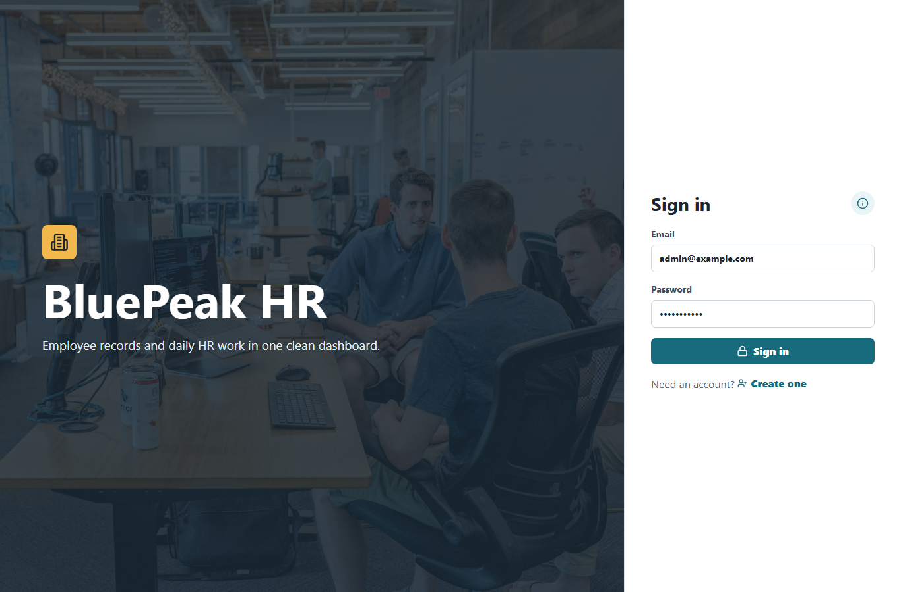
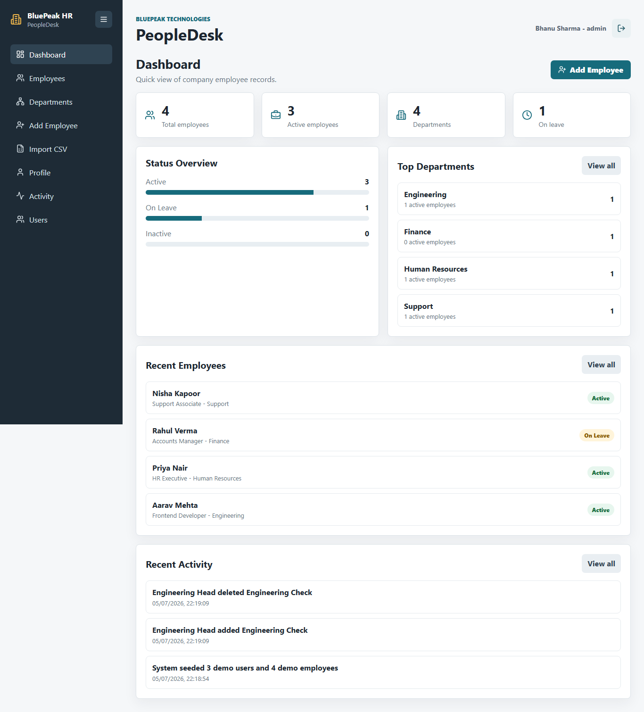
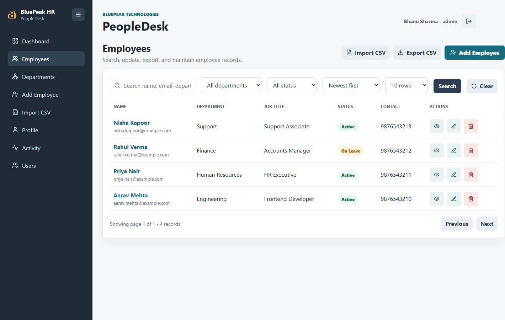
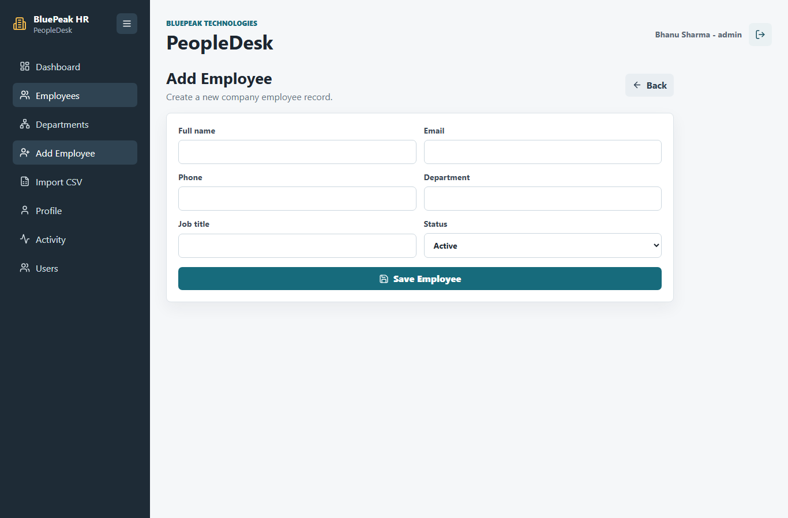
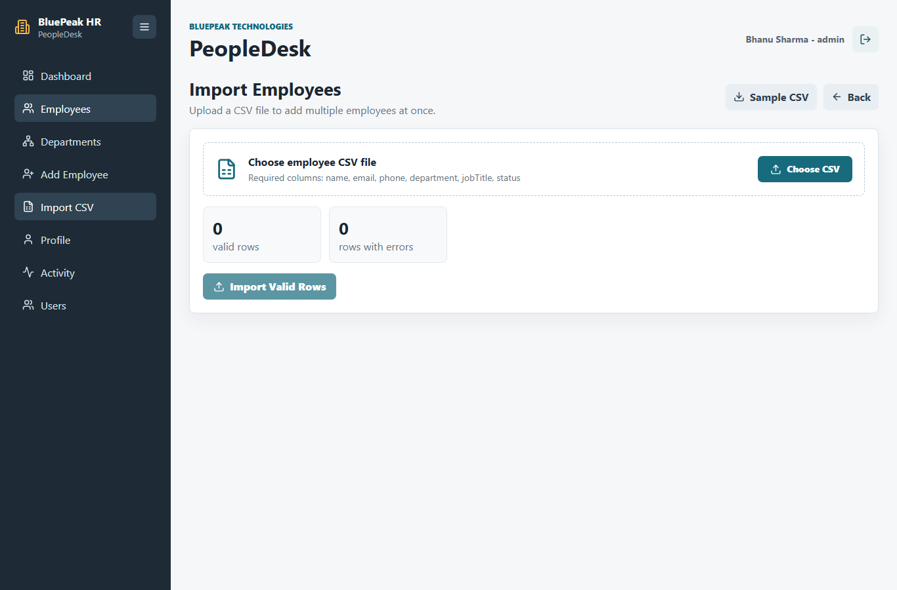
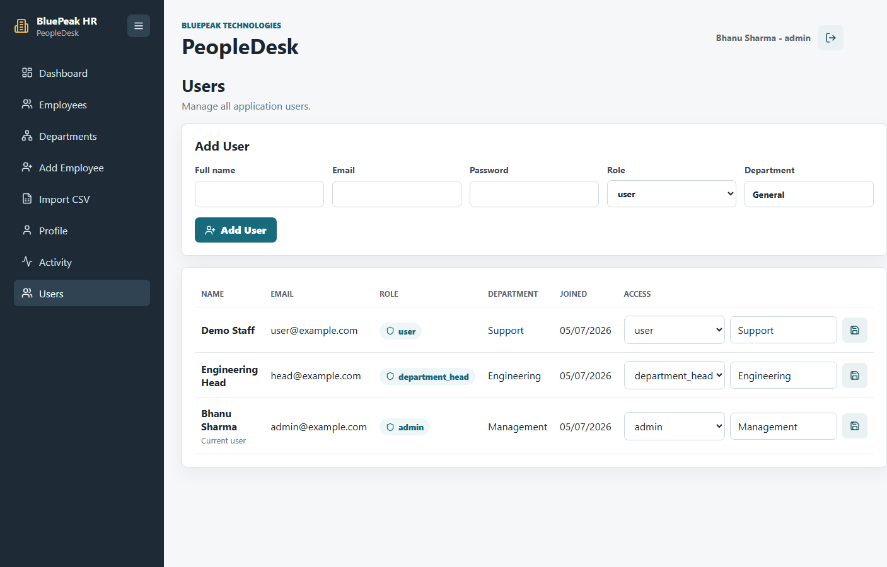
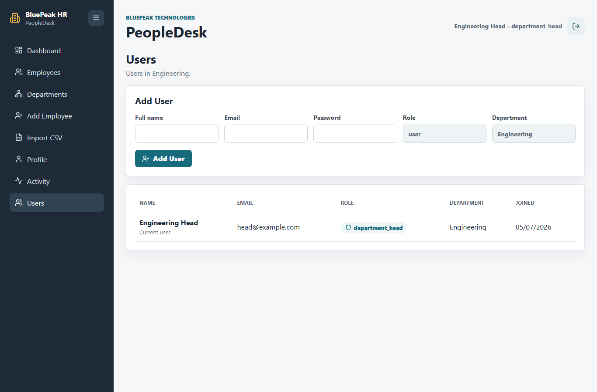
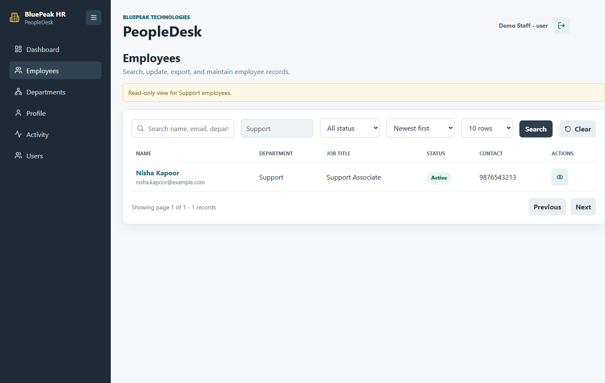

Submitted in partial fulfillment of the requirements for the award of the degree of
Full Stack Development
This is to certify that the project report titled MERN Stack Employee Management System has been prepared and submitted by Bhanu Sharma, Enrollment No. O24MCA112292, in partial fulfillment of the requirements for the award of the degree of Master of Computer Application.
The project work has been carried out under the guidance of Alok Srivastva during the academic year 2024-2026.
I, Bhanu Sharma, hereby solemnly declare that the project report titled MERN Stack Employee Management System submitted in partial fulfillment of the requirements for the award of the degree of Master of Computer Application is my original work.
This project has been carried out by me during the academic year 2024-2026 under the supervision of Alok Srivastva. The work has not been submitted previously to any other university, institution, or examination body for the award of any degree, diploma, or certification.
All sources of information used in this report have been duly acknowledged and referenced in accordance with academic ethics and plagiarism norms.
Place: Chandigarh
Date: 05 July 2026
I would like to express my sincere gratitude to my guide and mentor, Alok Srivastva, for valuable guidance and support throughout this project. I also thank the faculty members of Chandigarh University for their encouragement and academic support.
I am thankful to all individuals who helped me complete this project successfully. Their support, feedback, and motivation helped me improve the quality of the application and documentation.
The MERN Stack Employee Management System is a web-based application designed to help companies manage employee information efficiently. The system provides secure user authentication, role-based access control, and CRUD operations for employee records such as name, contact details, department, job title, and employment status.
The backend is developed using Node.js and Express.js with MongoDB as the database. The frontend is developed using React. JWT authentication protects private routes and ensures that only authorized users can access employee data. Admin users can manage user roles, while employee data access is controlled according to user role.
The system includes dashboard summaries, employee search, filtering, sorting, pagination, CSV import with validation, CSV export, department summaries, profile management, activity logs, role-based user views, screenshots, deployment on Render, and Playwright testing. The project demonstrates database design, system analysis, REST API development, frontend integration, authentication, testing, and cloud deployment.
Employee data management is an important operational requirement for every organization. Companies need to maintain accurate employee information such as personal contact details, department, job title, employment status, and account-level access. If this data is stored only in spreadsheets or paper records, it becomes difficult to search, update, secure, and audit.
The MERN Stack Employee Management System is a web application developed to solve this problem using MongoDB, Express.js, React, and Node.js. The project provides a secure interface for managing employee records and includes authentication, role-based authorization, search, filtering, CSV import/export, activity tracking, and a dashboard for summary information.
The application uses a company-style interface named BluePeak HR / PeopleDesk so that the project looks and behaves like a real workplace system. Instead of keeping all functionality on a single page, the application is divided into separate pages for dashboard, employees, employee details, add employee, edit employee, departments, CSV import, profile, users, and activity logs.
The main purpose of the project is to demonstrate a complete full-stack workflow: database design, backend API development, frontend implementation, authentication, authorization, testing, documentation, and deployment readiness.
In relation to chapter 1: Introduction, the topic of organizational record keeping is important because it connects the academic discussion with the actual implementation of the MERN Stack Employee Management System. Employee records are used by almost every department, including human resources, finance, administration, and project management. A digital record system reduces the delay that occurs when information is stored in separate files. In this project, this point is not treated only as theory; it is reflected in the way the application stores records, protects routes, validates input, and presents information through separate pages. This helps demonstrate that the system was designed around practical organizational needs rather than only around a basic CRUD checklist.
From the perspective of background of the study, organizational record keeping also supports maintainability and evaluation. A project reviewer can identify how the requirement is handled by checking the database models, backend controllers, React pages, service files, and documentation. This makes the report traceable to the codebase. It also makes future improvement easier because every important feature has a clear place in the system. The same approach can be extended later for attendance, payroll, leave management, reporting, notifications, and other HR modules without changing the basic architecture.
In relation to chapter 1: Introduction, the topic of need for web-based access is important because it connects the academic discussion with the actual implementation of the MERN Stack Employee Management System. A browser-based application allows authorized users to access employee information from different devices without installing separate desktop software. This makes the system practical for academic demonstration and real organizational use. In this project, this point is not treated only as theory; it is reflected in the way the application stores records, protects routes, validates input, and presents information through separate pages. This helps demonstrate that the system was designed around practical organizational needs rather than only around a basic CRUD checklist.
From the perspective of background of the study, need for web-based access also supports maintainability and evaluation. A project reviewer can identify how the requirement is handled by checking the database models, backend controllers, React pages, service files, and documentation. This makes the report traceable to the codebase. It also makes future improvement easier because every important feature has a clear place in the system. The same approach can be extended later for attendance, payroll, leave management, reporting, notifications, and other HR modules without changing the basic architecture.
In relation to chapter 1: Introduction, the topic of growth of full-stack systems is important because it connects the academic discussion with the actual implementation of the MERN Stack Employee Management System. Modern business applications often use separate frontend, backend, and database layers. The MERN stack follows this pattern and is suitable for projects where user interaction and database operations are equally important. In this project, this point is not treated only as theory; it is reflected in the way the application stores records, protects routes, validates input, and presents information through separate pages. This helps demonstrate that the system was designed around practical organizational needs rather than only around a basic CRUD checklist.
From the perspective of background of the study, growth of full-stack systems also supports maintainability and evaluation. A project reviewer can identify how the requirement is handled by checking the database models, backend controllers, React pages, service files, and documentation. This makes the report traceable to the codebase. It also makes future improvement easier because every important feature has a clear place in the system. The same approach can be extended later for attendance, payroll, leave management, reporting, notifications, and other HR modules without changing the basic architecture.
In relation to chapter 1: Introduction, the topic of manual dependency is important because it connects the academic discussion with the actual implementation of the MERN Stack Employee Management System. Organizations that depend on spreadsheets must manually maintain formats, filters, copies, and backups. These activities consume time and can introduce mistakes when multiple people update the same data. In this project, this point is not treated only as theory; it is reflected in the way the application stores records, protects routes, validates input, and presents information through separate pages. This helps demonstrate that the system was designed around practical organizational needs rather than only around a basic CRUD checklist.
From the perspective of problem context, manual dependency also supports maintainability and evaluation. A project reviewer can identify how the requirement is handled by checking the database models, backend controllers, React pages, service files, and documentation. This makes the report traceable to the codebase. It also makes future improvement easier because every important feature has a clear place in the system. The same approach can be extended later for attendance, payroll, leave management, reporting, notifications, and other HR modules without changing the basic architecture.
In relation to chapter 1: Introduction, the topic of limited security is important because it connects the academic discussion with the actual implementation of the MERN Stack Employee Management System. Simple files do not provide strong role-based access control. Anyone with file access may be able to view or change sensitive employee information without proper authorization. In this project, this point is not treated only as theory; it is reflected in the way the application stores records, protects routes, validates input, and presents information through separate pages. This helps demonstrate that the system was designed around practical organizational needs rather than only around a basic CRUD checklist.
From the perspective of problem context, limited security also supports maintainability and evaluation. A project reviewer can identify how the requirement is handled by checking the database models, backend controllers, React pages, service files, and documentation. This makes the report traceable to the codebase. It also makes future improvement easier because every important feature has a clear place in the system. The same approach can be extended later for attendance, payroll, leave management, reporting, notifications, and other HR modules without changing the basic architecture.
In relation to chapter 1: Introduction, the topic of difficulty in tracking changes is important because it connects the academic discussion with the actual implementation of the MERN Stack Employee Management System. A manual system generally does not show who created, updated, imported, or deleted a record. Activity tracking is important because it improves accountability. In this project, this point is not treated only as theory; it is reflected in the way the application stores records, protects routes, validates input, and presents information through separate pages. This helps demonstrate that the system was designed around practical organizational needs rather than only around a basic CRUD checklist.
From the perspective of problem context, difficulty in tracking changes also supports maintainability and evaluation. A project reviewer can identify how the requirement is handled by checking the database models, backend controllers, React pages, service files, and documentation. This makes the report traceable to the codebase. It also makes future improvement easier because every important feature has a clear place in the system. The same approach can be extended later for attendance, payroll, leave management, reporting, notifications, and other HR modules without changing the basic architecture.
In relation to chapter 1: Introduction, the topic of academic relevance is important because it connects the academic discussion with the actual implementation of the MERN Stack Employee Management System. The project demonstrates important full-stack development concepts such as schema design, REST API development, frontend routing, authentication, authorization, testing, and deployment preparation. In this project, this point is not treated only as theory; it is reflected in the way the application stores records, protects routes, validates input, and presents information through separate pages. This helps demonstrate that the system was designed around practical organizational needs rather than only around a basic CRUD checklist.
From the perspective of project relevance, academic relevance also supports maintainability and evaluation. A project reviewer can identify how the requirement is handled by checking the database models, backend controllers, React pages, service files, and documentation. This makes the report traceable to the codebase. It also makes future improvement easier because every important feature has a clear place in the system. The same approach can be extended later for attendance, payroll, leave management, reporting, notifications, and other HR modules without changing the basic architecture.
In relation to chapter 1: Introduction, the topic of industry relevance is important because it connects the academic discussion with the actual implementation of the MERN Stack Employee Management System. Employee management is a common business requirement. Even a basic version of such a system helps demonstrate practical thinking about users, workflows, security, and data management. In this project, this point is not treated only as theory; it is reflected in the way the application stores records, protects routes, validates input, and presents information through separate pages. This helps demonstrate that the system was designed around practical organizational needs rather than only around a basic CRUD checklist.
From the perspective of project relevance, industry relevance also supports maintainability and evaluation. A project reviewer can identify how the requirement is handled by checking the database models, backend controllers, React pages, service files, and documentation. This makes the report traceable to the codebase. It also makes future improvement easier because every important feature has a clear place in the system. The same approach can be extended later for attendance, payroll, leave management, reporting, notifications, and other HR modules without changing the basic architecture.
In relation to chapter 1: Introduction, the topic of skill development is important because it connects the academic discussion with the actual implementation of the MERN Stack Employee Management System. The project supports hands-on learning in React, Express, MongoDB, Node.js, Git, GitHub, testing, and documentation. These are important skills for full-stack development. In this project, this point is not treated only as theory; it is reflected in the way the application stores records, protects routes, validates input, and presents information through separate pages. This helps demonstrate that the system was designed around practical organizational needs rather than only around a basic CRUD checklist.
From the perspective of project relevance, skill development also supports maintainability and evaluation. A project reviewer can identify how the requirement is handled by checking the database models, backend controllers, React pages, service files, and documentation. This makes the report traceable to the codebase. It also makes future improvement easier because every important feature has a clear place in the system. The same approach can be extended later for attendance, payroll, leave management, reporting, notifications, and other HR modules without changing the basic architecture.
In relation to chapter 1: Introduction, the topic of employee operations is important because it connects the academic discussion with the actual implementation of the MERN Stack Employee Management System. The project scope includes creating, viewing, updating, deleting, searching, filtering, sorting, importing, and exporting employee records. These operations cover the basic data lifecycle. In this project, this point is not treated only as theory; it is reflected in the way the application stores records, protects routes, validates input, and presents information through separate pages. This helps demonstrate that the system was designed around practical organizational needs rather than only around a basic CRUD checklist.
From the perspective of scope of the project, employee operations also supports maintainability and evaluation. A project reviewer can identify how the requirement is handled by checking the database models, backend controllers, React pages, service files, and documentation. This makes the report traceable to the codebase. It also makes future improvement easier because every important feature has a clear place in the system. The same approach can be extended later for attendance, payroll, leave management, reporting, notifications, and other HR modules without changing the basic architecture.
In relation to chapter 1: Introduction, the topic of user operations is important because it connects the academic discussion with the actual implementation of the MERN Stack Employee Management System. The scope includes registration, login, profile update, admin user role management, department-head staff creation, and read-only department directory access for normal users. These features make the application more complete than an open public form. In this project, this point is not treated only as theory; it is reflected in the way the application stores records, protects routes, validates input, and presents information through separate pages. This helps demonstrate that the system was designed around practical organizational needs rather than only around a basic CRUD checklist.
From the perspective of scope of the project, user operations also supports maintainability and evaluation. A project reviewer can identify how the requirement is handled by checking the database models, backend controllers, React pages, service files, and documentation. This makes the report traceable to the codebase. It also makes future improvement easier because every important feature has a clear place in the system. The same approach can be extended later for attendance, payroll, leave management, reporting, notifications, and other HR modules without changing the basic architecture.
In relation to chapter 1: Introduction, the topic of reporting support is important because it connects the academic discussion with the actual implementation of the MERN Stack Employee Management System. The project includes milestone reports, a project report, API test cases, deployment notes, and a submission checklist so that the implementation can be evaluated clearly. In this project, this point is not treated only as theory; it is reflected in the way the application stores records, protects routes, validates input, and presents information through separate pages. This helps demonstrate that the system was designed around practical organizational needs rather than only around a basic CRUD checklist.
From the perspective of scope of the project, reporting support also supports maintainability and evaluation. A project reviewer can identify how the requirement is handled by checking the database models, backend controllers, React pages, service files, and documentation. This makes the report traceable to the codebase. It also makes future improvement easier because every important feature has a clear place in the system. The same approach can be extended later for attendance, payroll, leave management, reporting, notifications, and other HR modules without changing the basic architecture.
In relation to chapter 1: Introduction, the topic of efficiency is important because it connects the academic discussion with the actual implementation of the MERN Stack Employee Management System. The system reduces repeated manual work by providing forms, filters, pagination, CSV import, and CSV export. Users can manage many records more quickly. In this project, this point is not treated only as theory; it is reflected in the way the application stores records, protects routes, validates input, and presents information through separate pages. This helps demonstrate that the system was designed around practical organizational needs rather than only around a basic CRUD checklist.
From the perspective of expected benefits, efficiency also supports maintainability and evaluation. A project reviewer can identify how the requirement is handled by checking the database models, backend controllers, React pages, service files, and documentation. This makes the report traceable to the codebase. It also makes future improvement easier because every important feature has a clear place in the system. The same approach can be extended later for attendance, payroll, leave management, reporting, notifications, and other HR modules without changing the basic architecture.
In relation to chapter 1: Introduction, the topic of accuracy is important because it connects the academic discussion with the actual implementation of the MERN Stack Employee Management System. Validation rules reduce incorrect data entry. Required fields, email format checks, phone format checks, status values, and duplicate checks improve record quality. In this project, this point is not treated only as theory; it is reflected in the way the application stores records, protects routes, validates input, and presents information through separate pages. This helps demonstrate that the system was designed around practical organizational needs rather than only around a basic CRUD checklist.
From the perspective of expected benefits, accuracy also supports maintainability and evaluation. A project reviewer can identify how the requirement is handled by checking the database models, backend controllers, React pages, service files, and documentation. This makes the report traceable to the codebase. It also makes future improvement easier because every important feature has a clear place in the system. The same approach can be extended later for attendance, payroll, leave management, reporting, notifications, and other HR modules without changing the basic architecture.
In relation to chapter 1: Introduction, the topic of maintainability is important because it connects the academic discussion with the actual implementation of the MERN Stack Employee Management System. The codebase is divided into controllers, models, routes, pages, services, utilities, and components. This separation makes the project easier to understand and extend. In this project, this point is not treated only as theory; it is reflected in the way the application stores records, protects routes, validates input, and presents information through separate pages. This helps demonstrate that the system was designed around practical organizational needs rather than only around a basic CRUD checklist.
From the perspective of expected benefits, maintainability also supports maintainability and evaluation. A project reviewer can identify how the requirement is handled by checking the database models, backend controllers, React pages, service files, and documentation. This makes the report traceable to the codebase. It also makes future improvement easier because every important feature has a clear place in the system. The same approach can be extended later for attendance, payroll, leave management, reporting, notifications, and other HR modules without changing the basic architecture.
The existing manual method of employee record management usually depends on spreadsheets, documents, or scattered files. Such a method may work for a small number of records, but it becomes inefficient when employee data grows. Searching records, maintaining updated information, and controlling access become difficult.
A web-based employee management system improves the situation by centralizing the data in a database and providing a secure interface to authorized users. The proposed system supports structured employee records, quick search, department-wise view, role control, and activity logs.
The system also includes bulk import through CSV files. This is useful when a company already has employee data in spreadsheet format and wants to move it into the application without entering each employee manually.
In relation to chapter 2: System Study, the topic of spreadsheet-based records is important because it connects the academic discussion with the actual implementation of the MERN Stack Employee Management System. Many small organizations use spreadsheets because they are easy to start with. However, spreadsheets become difficult to manage when data grows and multiple people need access. In this project, this point is not treated only as theory; it is reflected in the way the application stores records, protects routes, validates input, and presents information through separate pages. This helps demonstrate that the system was designed around practical organizational needs rather than only around a basic CRUD checklist.
From the perspective of existing system study, spreadsheet-based records also supports maintainability and evaluation. A project reviewer can identify how the requirement is handled by checking the database models, backend controllers, React pages, service files, and documentation. This makes the report traceable to the codebase. It also makes future improvement easier because every important feature has a clear place in the system. The same approach can be extended later for attendance, payroll, leave management, reporting, notifications, and other HR modules without changing the basic architecture.
In relation to chapter 2: System Study, the topic of document-based storage is important because it connects the academic discussion with the actual implementation of the MERN Stack Employee Management System. Employee details may also be stored in word processor files, scanned forms, or email attachments. This makes searching and updating records slow and unreliable. In this project, this point is not treated only as theory; it is reflected in the way the application stores records, protects routes, validates input, and presents information through separate pages. This helps demonstrate that the system was designed around practical organizational needs rather than only around a basic CRUD checklist.
From the perspective of existing system study, document-based storage also supports maintainability and evaluation. A project reviewer can identify how the requirement is handled by checking the database models, backend controllers, React pages, service files, and documentation. This makes the report traceable to the codebase. It also makes future improvement easier because every important feature has a clear place in the system. The same approach can be extended later for attendance, payroll, leave management, reporting, notifications, and other HR modules without changing the basic architecture.
In relation to chapter 2: System Study, the topic of communication delays is important because it connects the academic discussion with the actual implementation of the MERN Stack Employee Management System. When records are not centralized, users must ask another person for updated information. This dependency increases delay and reduces productivity. In this project, this point is not treated only as theory; it is reflected in the way the application stores records, protects routes, validates input, and presents information through separate pages. This helps demonstrate that the system was designed around practical organizational needs rather than only around a basic CRUD checklist.
From the perspective of existing system study, communication delays also supports maintainability and evaluation. A project reviewer can identify how the requirement is handled by checking the database models, backend controllers, React pages, service files, and documentation. This makes the report traceable to the codebase. It also makes future improvement easier because every important feature has a clear place in the system. The same approach can be extended later for attendance, payroll, leave management, reporting, notifications, and other HR modules without changing the basic architecture.
In relation to chapter 2: System Study, the topic of administrator needs is important because it connects the academic discussion with the actual implementation of the MERN Stack Employee Management System. Administrators need a complete view of employee records, user accounts, role permissions, and recent activity. The system provides dedicated admin features for this purpose. In this project, this point is not treated only as theory; it is reflected in the way the application stores records, protects routes, validates input, and presents information through separate pages. This helps demonstrate that the system was designed around practical organizational needs rather than only around a basic CRUD checklist.
From the perspective of user study, administrator needs also supports maintainability and evaluation. A project reviewer can identify how the requirement is handled by checking the database models, backend controllers, React pages, service files, and documentation. This makes the report traceable to the codebase. It also makes future improvement easier because every important feature has a clear place in the system. The same approach can be extended later for attendance, payroll, leave management, reporting, notifications, and other HR modules without changing the basic architecture.
In relation to chapter 2: System Study, the topic of regular user needs is important because it connects the academic discussion with the actual implementation of the MERN Stack Employee Management System. Regular users need simple read-only access to department records that they are authorized to view. They should not see administrative controls that are outside their responsibility. In this project, this point is not treated only as theory; it is reflected in the way the application stores records, protects routes, validates input, and presents information through separate pages. This helps demonstrate that the system was designed around practical organizational needs rather than only around a basic CRUD checklist.
From the perspective of user study, regular user needs also supports maintainability and evaluation. A project reviewer can identify how the requirement is handled by checking the database models, backend controllers, React pages, service files, and documentation. This makes the report traceable to the codebase. It also makes future improvement easier because every important feature has a clear place in the system. The same approach can be extended later for attendance, payroll, leave management, reporting, notifications, and other HR modules without changing the basic architecture.
In relation to chapter 2: System Study, the topic of evaluation needs is important because it connects the academic discussion with the actual implementation of the MERN Stack Employee Management System. For academic review, the system must clearly show implemented modules, database usage, frontend pages, API endpoints, testing, screenshots, and deployment. In this project, this point is not treated only as theory; it is reflected in the way the application stores records, protects routes, validates input, and presents information through separate pages. This helps demonstrate that the system was designed around practical organizational needs rather than only around a basic CRUD checklist.
From the perspective of user study, evaluation needs also supports maintainability and evaluation. A project reviewer can identify how the requirement is handled by checking the database models, backend controllers, React pages, service files, and documentation. This makes the report traceable to the codebase. It also makes future improvement easier because every important feature has a clear place in the system. The same approach can be extended later for attendance, payroll, leave management, reporting, notifications, and other HR modules without changing the basic architecture.
In relation to chapter 2: System Study, the topic of duplicate information is important because it connects the academic discussion with the actual implementation of the MERN Stack Employee Management System. Duplicate employee records can appear when data is copied between files. Duplicate emails are especially problematic because email is often used as a unique contact identifier. In this project, this point is not treated only as theory; it is reflected in the way the application stores records, protects routes, validates input, and presents information through separate pages. This helps demonstrate that the system was designed around practical organizational needs rather than only around a basic CRUD checklist.
From the perspective of operational issues in existing approach, duplicate information also supports maintainability and evaluation. A project reviewer can identify how the requirement is handled by checking the database models, backend controllers, React pages, service files, and documentation. This makes the report traceable to the codebase. It also makes future improvement easier because every important feature has a clear place in the system. The same approach can be extended later for attendance, payroll, leave management, reporting, notifications, and other HR modules without changing the basic architecture.
In relation to chapter 2: System Study, the topic of inconsistent formats is important because it connects the academic discussion with the actual implementation of the MERN Stack Employee Management System. Departments, job titles, phone numbers, and statuses may be written in different formats. A structured application can enforce consistent input patterns. In this project, this point is not treated only as theory; it is reflected in the way the application stores records, protects routes, validates input, and presents information through separate pages. This helps demonstrate that the system was designed around practical organizational needs rather than only around a basic CRUD checklist.
From the perspective of operational issues in existing approach, inconsistent formats also supports maintainability and evaluation. A project reviewer can identify how the requirement is handled by checking the database models, backend controllers, React pages, service files, and documentation. This makes the report traceable to the codebase. It also makes future improvement easier because every important feature has a clear place in the system. The same approach can be extended later for attendance, payroll, leave management, reporting, notifications, and other HR modules without changing the basic architecture.
In relation to chapter 2: System Study, the topic of weak accountability is important because it connects the academic discussion with the actual implementation of the MERN Stack Employee Management System. Without activity history, it is difficult to understand what changed and who performed the change. This is a serious weakness in administrative systems. In this project, this point is not treated only as theory; it is reflected in the way the application stores records, protects routes, validates input, and presents information through separate pages. This helps demonstrate that the system was designed around practical organizational needs rather than only around a basic CRUD checklist.
From the perspective of operational issues in existing approach, weak accountability also supports maintainability and evaluation. A project reviewer can identify how the requirement is handled by checking the database models, backend controllers, React pages, service files, and documentation. This makes the report traceable to the codebase. It also makes future improvement easier because every important feature has a clear place in the system. The same approach can be extended later for attendance, payroll, leave management, reporting, notifications, and other HR modules without changing the basic architecture.
In relation to chapter 2: System Study, the topic of technical feasibility is important because it connects the academic discussion with the actual implementation of the MERN Stack Employee Management System. The MERN stack is technically suitable because it supports JSON-based communication across frontend, backend, and database layers. It also works well with cloud deployment platforms. In this project, this point is not treated only as theory; it is reflected in the way the application stores records, protects routes, validates input, and presents information through separate pages. This helps demonstrate that the system was designed around practical organizational needs rather than only around a basic CRUD checklist.
From the perspective of feasibility study, technical feasibility also supports maintainability and evaluation. A project reviewer can identify how the requirement is handled by checking the database models, backend controllers, React pages, service files, and documentation. This makes the report traceable to the codebase. It also makes future improvement easier because every important feature has a clear place in the system. The same approach can be extended later for attendance, payroll, leave management, reporting, notifications, and other HR modules without changing the basic architecture.
In relation to chapter 2: System Study, the topic of operational feasibility is important because it connects the academic discussion with the actual implementation of the MERN Stack Employee Management System. The interface is designed around common workflows such as login, viewing dashboard summaries, searching employees, adding employees, importing CSV records, and managing roles. In this project, this point is not treated only as theory; it is reflected in the way the application stores records, protects routes, validates input, and presents information through separate pages. This helps demonstrate that the system was designed around practical organizational needs rather than only around a basic CRUD checklist.
From the perspective of feasibility study, operational feasibility also supports maintainability and evaluation. A project reviewer can identify how the requirement is handled by checking the database models, backend controllers, React pages, service files, and documentation. This makes the report traceable to the codebase. It also makes future improvement easier because every important feature has a clear place in the system. The same approach can be extended later for attendance, payroll, leave management, reporting, notifications, and other HR modules without changing the basic architecture.
In relation to chapter 2: System Study, the topic of economic feasibility is important because it connects the academic discussion with the actual implementation of the MERN Stack Employee Management System. The project can be developed and demonstrated using free or low-cost tools such as MongoDB Community/Atlas, Node.js, React, GitHub, and Render. In this project, this point is not treated only as theory; it is reflected in the way the application stores records, protects routes, validates input, and presents information through separate pages. This helps demonstrate that the system was designed around practical organizational needs rather than only around a basic CRUD checklist.
From the perspective of feasibility study, economic feasibility also supports maintainability and evaluation. A project reviewer can identify how the requirement is handled by checking the database models, backend controllers, React pages, service files, and documentation. This makes the report traceable to the codebase. It also makes future improvement easier because every important feature has a clear place in the system. The same approach can be extended later for attendance, payroll, leave management, reporting, notifications, and other HR modules without changing the basic architecture.
In relation to chapter 2: System Study, the topic of centralized data is important because it connects the academic discussion with the actual implementation of the MERN Stack Employee Management System. The proposed system stores employee records in MongoDB instead of scattered files. This improves consistency and enables structured queries. In this project, this point is not treated only as theory; it is reflected in the way the application stores records, protects routes, validates input, and presents information through separate pages. This helps demonstrate that the system was designed around practical organizational needs rather than only around a basic CRUD checklist.
From the perspective of proposed system study, centralized data also supports maintainability and evaluation. A project reviewer can identify how the requirement is handled by checking the database models, backend controllers, React pages, service files, and documentation. This makes the report traceable to the codebase. It also makes future improvement easier because every important feature has a clear place in the system. The same approach can be extended later for attendance, payroll, leave management, reporting, notifications, and other HR modules without changing the basic architecture.
In relation to chapter 2: System Study, the topic of secure access is important because it connects the academic discussion with the actual implementation of the MERN Stack Employee Management System. JWT authentication and protected backend routes ensure that only logged-in users can access the application data. Role and department rules provide extra control. In this project, this point is not treated only as theory; it is reflected in the way the application stores records, protects routes, validates input, and presents information through separate pages. This helps demonstrate that the system was designed around practical organizational needs rather than only around a basic CRUD checklist.
From the perspective of proposed system study, secure access also supports maintainability and evaluation. A project reviewer can identify how the requirement is handled by checking the database models, backend controllers, React pages, service files, and documentation. This makes the report traceable to the codebase. It also makes future improvement easier because every important feature has a clear place in the system. The same approach can be extended later for attendance, payroll, leave management, reporting, notifications, and other HR modules without changing the basic architecture.
In relation to chapter 2: System Study, the topic of improved workflows is important because it connects the academic discussion with the actual implementation of the MERN Stack Employee Management System. Separate pages for dashboard, employees, departments, import, activity, profile, and users make the application easier to navigate and demonstrate. In this project, this point is not treated only as theory; it is reflected in the way the application stores records, protects routes, validates input, and presents information through separate pages. This helps demonstrate that the system was designed around practical organizational needs rather than only around a basic CRUD checklist.
From the perspective of proposed system study, improved workflows also supports maintainability and evaluation. A project reviewer can identify how the requirement is handled by checking the database models, backend controllers, React pages, service files, and documentation. This makes the report traceable to the codebase. It also makes future improvement easier because every important feature has a clear place in the system. The same approach can be extended later for attendance, payroll, leave management, reporting, notifications, and other HR modules without changing the basic architecture.
System analysis identifies the functional and non-functional requirements of the proposed application. The project is designed for users who need to manage employee records securely through a browser-based interface.
The system has three major roles: admin, department head, and user. Admin users can manage all employee and user records. Department heads can manage employees and staff users only inside their own department. Normal users can view department-related information in read-only mode. This role-based design improves privacy and prevents unauthorized access.
The system also validates input data at both frontend and backend levels. CSV import validates required columns, email format, phone format, status values, and duplicate emails before importing records.
In relation to chapter 3: System Analysis, the topic of functional clarity is important because it connects the academic discussion with the actual implementation of the MERN Stack Employee Management System. Functional requirements define what the system must do. In this project, major functions include authentication, employee CRUD, CSV import, search, pagination, activity tracking, and role management. In this project, this point is not treated only as theory; it is reflected in the way the application stores records, protects routes, validates input, and presents information through separate pages. This helps demonstrate that the system was designed around practical organizational needs rather than only around a basic CRUD checklist.
From the perspective of requirement analysis, functional clarity also supports maintainability and evaluation. A project reviewer can identify how the requirement is handled by checking the database models, backend controllers, React pages, service files, and documentation. This makes the report traceable to the codebase. It also makes future improvement easier because every important feature has a clear place in the system. The same approach can be extended later for attendance, payroll, leave management, reporting, notifications, and other HR modules without changing the basic architecture.
In relation to chapter 3: System Analysis, the topic of input requirements is important because it connects the academic discussion with the actual implementation of the MERN Stack Employee Management System. The system requires user input through forms and CSV files. Important employee inputs include name, email, phone, department, job title, and status. In this project, this point is not treated only as theory; it is reflected in the way the application stores records, protects routes, validates input, and presents information through separate pages. This helps demonstrate that the system was designed around practical organizational needs rather than only around a basic CRUD checklist.
From the perspective of requirement analysis, input requirements also supports maintainability and evaluation. A project reviewer can identify how the requirement is handled by checking the database models, backend controllers, React pages, service files, and documentation. This makes the report traceable to the codebase. It also makes future improvement easier because every important feature has a clear place in the system. The same approach can be extended later for attendance, payroll, leave management, reporting, notifications, and other HR modules without changing the basic architecture.
In relation to chapter 3: System Analysis, the topic of output requirements is important because it connects the academic discussion with the actual implementation of the MERN Stack Employee Management System. The system outputs dashboard summaries, employee tables, filtered search results, department summaries, activity logs, CSV exports, and validation messages. In this project, this point is not treated only as theory; it is reflected in the way the application stores records, protects routes, validates input, and presents information through separate pages. This helps demonstrate that the system was designed around practical organizational needs rather than only around a basic CRUD checklist.
From the perspective of requirement analysis, output requirements also supports maintainability and evaluation. A project reviewer can identify how the requirement is handled by checking the database models, backend controllers, React pages, service files, and documentation. This makes the report traceable to the codebase. It also makes future improvement easier because every important feature has a clear place in the system. The same approach can be extended later for attendance, payroll, leave management, reporting, notifications, and other HR modules without changing the basic architecture.
In relation to chapter 3: System Analysis, the topic of admin actor is important because it connects the academic discussion with the actual implementation of the MERN Stack Employee Management System. The admin actor can access all employee records, manage user roles, view activity, and perform bulk operations. This role represents a trusted administrative user. In this project, this point is not treated only as theory; it is reflected in the way the application stores records, protects routes, validates input, and presents information through separate pages. This helps demonstrate that the system was designed around practical organizational needs rather than only around a basic CRUD checklist.
From the perspective of actor analysis, admin actor also supports maintainability and evaluation. A project reviewer can identify how the requirement is handled by checking the database models, backend controllers, React pages, service files, and documentation. This makes the report traceable to the codebase. It also makes future improvement easier because every important feature has a clear place in the system. The same approach can be extended later for attendance, payroll, leave management, reporting, notifications, and other HR modules without changing the basic architecture.
In relation to chapter 3: System Analysis, the topic of department head actor is important because it connects the academic discussion with the actual implementation of the MERN Stack Employee Management System. The department head actor can manage employees and staff user accounts only within their own department. This role represents a middle level manager. In this project, this point is not treated only as theory; it is reflected in the way the application stores records, protects routes, validates input, and presents information through separate pages. This helps demonstrate that the system was designed around practical organizational needs rather than only around a basic CRUD checklist.
From the perspective of actor analysis, department head actor also supports maintainability and evaluation. A project reviewer can identify how the requirement is handled by checking the database models, backend controllers, React pages, service files, and documentation. This makes the report traceable to the codebase. It also makes future improvement easier because every important feature has a clear place in the system. The same approach can be extended later for attendance, payroll, leave management, reporting, notifications, and other HR modules without changing the basic architecture.
In relation to chapter 3: System Analysis, the topic of regular user actor is important because it connects the academic discussion with the actual implementation of the MERN Stack Employee Management System. The regular user can view department information in read-only mode but does not receive create, edit, delete, import, export, or role management controls. In this project, this point is not treated only as theory; it is reflected in the way the application stores records, protects routes, validates input, and presents information through separate pages. This helps demonstrate that the system was designed around practical organizational needs rather than only around a basic CRUD checklist.
From the perspective of actor analysis, regular user actor also supports maintainability and evaluation. A project reviewer can identify how the requirement is handled by checking the database models, backend controllers, React pages, service files, and documentation. This makes the report traceable to the codebase. It also makes future improvement easier because every important feature has a clear place in the system. The same approach can be extended later for attendance, payroll, leave management, reporting, notifications, and other HR modules without changing the basic architecture.
In relation to chapter 3: System Analysis, the topic of system actor is important because it connects the academic discussion with the actual implementation of the MERN Stack Employee Management System. The system itself validates data, hashes passwords, issues tokens, checks authorization, records activity, and returns structured responses to the frontend. In this project, this point is not treated only as theory; it is reflected in the way the application stores records, protects routes, validates input, and presents information through separate pages. This helps demonstrate that the system was designed around practical organizational needs rather than only around a basic CRUD checklist.
From the perspective of actor analysis, system actor also supports maintainability and evaluation. A project reviewer can identify how the requirement is handled by checking the database models, backend controllers, React pages, service files, and documentation. This makes the report traceable to the codebase. It also makes future improvement easier because every important feature has a clear place in the system. The same approach can be extended later for attendance, payroll, leave management, reporting, notifications, and other HR modules without changing the basic architecture.
In relation to chapter 3: System Analysis, the topic of user data is important because it connects the academic discussion with the actual implementation of the MERN Stack Employee Management System. User data includes identity, email, password hash, role, and timestamps. Passwords are never stored as plain text. In this project, this point is not treated only as theory; it is reflected in the way the application stores records, protects routes, validates input, and presents information through separate pages. This helps demonstrate that the system was designed around practical organizational needs rather than only around a basic CRUD checklist.
From the perspective of data analysis, user data also supports maintainability and evaluation. A project reviewer can identify how the requirement is handled by checking the database models, backend controllers, React pages, service files, and documentation. This makes the report traceable to the codebase. It also makes future improvement easier because every important feature has a clear place in the system. The same approach can be extended later for attendance, payroll, leave management, reporting, notifications, and other HR modules without changing the basic architecture.
In relation to chapter 3: System Analysis, the topic of employee data is important because it connects the academic discussion with the actual implementation of the MERN Stack Employee Management System. Employee data includes personal contact and work-related details. The createdBy field connects employee records to the user who created them, while the department field supports scoped access. In this project, this point is not treated only as theory; it is reflected in the way the application stores records, protects routes, validates input, and presents information through separate pages. This helps demonstrate that the system was designed around practical organizational needs rather than only around a basic CRUD checklist.
From the perspective of data analysis, employee data also supports maintainability and evaluation. A project reviewer can identify how the requirement is handled by checking the database models, backend controllers, React pages, service files, and documentation. This makes the report traceable to the codebase. It also makes future improvement easier because every important feature has a clear place in the system. The same approach can be extended later for attendance, payroll, leave management, reporting, notifications, and other HR modules without changing the basic architecture.
In relation to chapter 3: System Analysis, the topic of activity data is important because it connects the academic discussion with the actual implementation of the MERN Stack Employee Management System. Activity data records action type, message, entity type, related entity, user, and timestamps. This gives visibility into important system operations. In this project, this point is not treated only as theory; it is reflected in the way the application stores records, protects routes, validates input, and presents information through separate pages. This helps demonstrate that the system was designed around practical organizational needs rather than only around a basic CRUD checklist.
From the perspective of data analysis, activity data also supports maintainability and evaluation. A project reviewer can identify how the requirement is handled by checking the database models, backend controllers, React pages, service files, and documentation. This makes the report traceable to the codebase. It also makes future improvement easier because every important feature has a clear place in the system. The same approach can be extended later for attendance, payroll, leave management, reporting, notifications, and other HR modules without changing the basic architecture.
In relation to chapter 3: System Analysis, the topic of invalid data risk is important because it connects the academic discussion with the actual implementation of the MERN Stack Employee Management System. Invalid records reduce the usefulness of the system. The project reduces this risk through frontend and backend validation rules. In this project, this point is not treated only as theory; it is reflected in the way the application stores records, protects routes, validates input, and presents information through separate pages. This helps demonstrate that the system was designed around practical organizational needs rather than only around a basic CRUD checklist.
From the perspective of risk analysis, invalid data risk also supports maintainability and evaluation. A project reviewer can identify how the requirement is handled by checking the database models, backend controllers, React pages, service files, and documentation. This makes the report traceable to the codebase. It also makes future improvement easier because every important feature has a clear place in the system. The same approach can be extended later for attendance, payroll, leave management, reporting, notifications, and other HR modules without changing the basic architecture.
In relation to chapter 3: System Analysis, the topic of unauthorized access risk is important because it connects the academic discussion with the actual implementation of the MERN Stack Employee Management System. Employee data is private. The project reduces unauthorized access risk using JWT tokens, protected routes, and admin authorization middleware. In this project, this point is not treated only as theory; it is reflected in the way the application stores records, protects routes, validates input, and presents information through separate pages. This helps demonstrate that the system was designed around practical organizational needs rather than only around a basic CRUD checklist.
From the perspective of risk analysis, unauthorized access risk also supports maintainability and evaluation. A project reviewer can identify how the requirement is handled by checking the database models, backend controllers, React pages, service files, and documentation. This makes the report traceable to the codebase. It also makes future improvement easier because every important feature has a clear place in the system. The same approach can be extended later for attendance, payroll, leave management, reporting, notifications, and other HR modules without changing the basic architecture.
In relation to chapter 3: System Analysis, the topic of deployment configuration risk is important because it connects the academic discussion with the actual implementation of the MERN Stack Employee Management System. Cloud deployment can fail if environment variables or CORS origins are wrong. The project includes .env examples and deployment documentation to reduce this risk. In this project, this point is not treated only as theory; it is reflected in the way the application stores records, protects routes, validates input, and presents information through separate pages. This helps demonstrate that the system was designed around practical organizational needs rather than only around a basic CRUD checklist.
From the perspective of risk analysis, deployment configuration risk also supports maintainability and evaluation. A project reviewer can identify how the requirement is handled by checking the database models, backend controllers, React pages, service files, and documentation. This makes the report traceable to the codebase. It also makes future improvement easier because every important feature has a clear place in the system. The same approach can be extended later for attendance, payroll, leave management, reporting, notifications, and other HR modules without changing the basic architecture.
In relation to chapter 3: System Analysis, the topic of authentication acceptance is important because it connects the academic discussion with the actual implementation of the MERN Stack Employee Management System. A user should be able to register, log in, remain authenticated on reload, update profile details, and log out safely. In this project, this point is not treated only as theory; it is reflected in the way the application stores records, protects routes, validates input, and presents information through separate pages. This helps demonstrate that the system was designed around practical organizational needs rather than only around a basic CRUD checklist.
From the perspective of acceptance criteria, authentication acceptance also supports maintainability and evaluation. A project reviewer can identify how the requirement is handled by checking the database models, backend controllers, React pages, service files, and documentation. This makes the report traceable to the codebase. It also makes future improvement easier because every important feature has a clear place in the system. The same approach can be extended later for attendance, payroll, leave management, reporting, notifications, and other HR modules without changing the basic architecture.
In relation to chapter 3: System Analysis, the topic of employee module acceptance is important because it connects the academic discussion with the actual implementation of the MERN Stack Employee Management System. Authorized users should be able to add, search, filter, sort, paginate, view, edit, delete, import, and export employee records. Regular users should receive a read-only department view. In this project, this point is not treated only as theory; it is reflected in the way the application stores records, protects routes, validates input, and presents information through separate pages. This helps demonstrate that the system was designed around practical organizational needs rather than only around a basic CRUD checklist.
From the perspective of acceptance criteria, employee module acceptance also supports maintainability and evaluation. A project reviewer can identify how the requirement is handled by checking the database models, backend controllers, React pages, service files, and documentation. This makes the report traceable to the codebase. It also makes future improvement easier because every important feature has a clear place in the system. The same approach can be extended later for attendance, payroll, leave management, reporting, notifications, and other HR modules without changing the basic architecture.
In relation to chapter 3: System Analysis, the topic of testing acceptance is important because it connects the academic discussion with the actual implementation of the MERN Stack Employee Management System. The project should pass production build checks, dependency audits, and Playwright smoke testing for major workflows. In this project, this point is not treated only as theory; it is reflected in the way the application stores records, protects routes, validates input, and presents information through separate pages. This helps demonstrate that the system was designed around practical organizational needs rather than only around a basic CRUD checklist.
From the perspective of acceptance criteria, testing acceptance also supports maintainability and evaluation. A project reviewer can identify how the requirement is handled by checking the database models, backend controllers, React pages, service files, and documentation. This makes the report traceable to the codebase. It also makes future improvement easier because every important feature has a clear place in the system. The same approach can be extended later for attendance, payroll, leave management, reporting, notifications, and other HR modules without changing the basic architecture.
The system follows a client-server architecture. The React frontend communicates with the Express backend using HTTP requests. The backend connects to MongoDB through Mongoose models. JWT tokens are used to authenticate users and protect private routes.
The frontend is divided into pages, components, services, context, and utilities. The backend is divided into routes, controllers, models, middleware, configuration, utilities, and data scripts. This separation improves maintainability and readability.
| Collection | Purpose | Important Fields |
|---|---|---|
| users | Stores application user accounts | name, email, password, role, timestamps |
| employees | Stores employee records | name, email, phone, department, jobTitle, status, createdBy, timestamps |
| activitylogs | Stores system activity history | action, message, entityType, entityId, user, timestamps |
In relation to chapter 4: System Design, the topic of client-server architecture is important because it connects the academic discussion with the actual implementation of the MERN Stack Employee Management System. The React frontend works as the client and the Express application works as the server. The client sends HTTP requests to backend APIs and receives JSON responses. In this project, this point is not treated only as theory; it is reflected in the way the application stores records, protects routes, validates input, and presents information through separate pages. This helps demonstrate that the system was designed around practical organizational needs rather than only around a basic CRUD checklist.
From the perspective of architecture design, client-server architecture also supports maintainability and evaluation. A project reviewer can identify how the requirement is handled by checking the database models, backend controllers, React pages, service files, and documentation. This makes the report traceable to the codebase. It also makes future improvement easier because every important feature has a clear place in the system. The same approach can be extended later for attendance, payroll, leave management, reporting, notifications, and other HR modules without changing the basic architecture.
In relation to chapter 4: System Design, the topic of database layer is important because it connects the academic discussion with the actual implementation of the MERN Stack Employee Management System. MongoDB stores persistent data, while Mongoose provides schema definitions, validation support, and query methods. This makes database operations more structured. In this project, this point is not treated only as theory; it is reflected in the way the application stores records, protects routes, validates input, and presents information through separate pages. This helps demonstrate that the system was designed around practical organizational needs rather than only around a basic CRUD checklist.
From the perspective of architecture design, database layer also supports maintainability and evaluation. A project reviewer can identify how the requirement is handled by checking the database models, backend controllers, React pages, service files, and documentation. This makes the report traceable to the codebase. It also makes future improvement easier because every important feature has a clear place in the system. The same approach can be extended later for attendance, payroll, leave management, reporting, notifications, and other HR modules without changing the basic architecture.
In relation to chapter 4: System Design, the topic of service separation is important because it connects the academic discussion with the actual implementation of the MERN Stack Employee Management System. Frontend service files isolate API calls from page components. Backend route files isolate endpoint definitions from controller logic. In this project, this point is not treated only as theory; it is reflected in the way the application stores records, protects routes, validates input, and presents information through separate pages. This helps demonstrate that the system was designed around practical organizational needs rather than only around a basic CRUD checklist.
From the perspective of architecture design, service separation also supports maintainability and evaluation. A project reviewer can identify how the requirement is handled by checking the database models, backend controllers, React pages, service files, and documentation. This makes the report traceable to the codebase. It also makes future improvement easier because every important feature has a clear place in the system. The same approach can be extended later for attendance, payroll, leave management, reporting, notifications, and other HR modules without changing the basic architecture.
In relation to chapter 4: System Design, the topic of user collection design is important because it connects the academic discussion with the actual implementation of the MERN Stack Employee Management System. The user collection stores name, email, hashed password, role, and timestamps. The role field supports authorization decisions. In this project, this point is not treated only as theory; it is reflected in the way the application stores records, protects routes, validates input, and presents information through separate pages. This helps demonstrate that the system was designed around practical organizational needs rather than only around a basic CRUD checklist.
From the perspective of database design details, user collection design also supports maintainability and evaluation. A project reviewer can identify how the requirement is handled by checking the database models, backend controllers, React pages, service files, and documentation. This makes the report traceable to the codebase. It also makes future improvement easier because every important feature has a clear place in the system. The same approach can be extended later for attendance, payroll, leave management, reporting, notifications, and other HR modules without changing the basic architecture.
In relation to chapter 4: System Design, the topic of employee collection design is important because it connects the academic discussion with the actual implementation of the MERN Stack Employee Management System. The employee collection stores name, email, phone, department, job title, status, creator, and timestamps. Text fields support search and display. In this project, this point is not treated only as theory; it is reflected in the way the application stores records, protects routes, validates input, and presents information through separate pages. This helps demonstrate that the system was designed around practical organizational needs rather than only around a basic CRUD checklist.
From the perspective of database design details, employee collection design also supports maintainability and evaluation. A project reviewer can identify how the requirement is handled by checking the database models, backend controllers, React pages, service files, and documentation. This makes the report traceable to the codebase. It also makes future improvement easier because every important feature has a clear place in the system. The same approach can be extended later for attendance, payroll, leave management, reporting, notifications, and other HR modules without changing the basic architecture.
In relation to chapter 4: System Design, the topic of activity log collection design is important because it connects the academic discussion with the actual implementation of the MERN Stack Employee Management System. The activity log collection stores action messages and related entity details. It supports audit-style visibility without changing the employee schema. In this project, this point is not treated only as theory; it is reflected in the way the application stores records, protects routes, validates input, and presents information through separate pages. This helps demonstrate that the system was designed around practical organizational needs rather than only around a basic CRUD checklist.
From the perspective of database design details, activity log collection design also supports maintainability and evaluation. A project reviewer can identify how the requirement is handled by checking the database models, backend controllers, React pages, service files, and documentation. This makes the report traceable to the codebase. It also makes future improvement easier because every important feature has a clear place in the system. The same approach can be extended later for attendance, payroll, leave management, reporting, notifications, and other HR modules without changing the basic architecture.
In relation to chapter 4: System Design, the topic of authentication endpoints is important because it connects the academic discussion with the actual implementation of the MERN Stack Employee Management System. Authentication endpoints handle registration, login, current user retrieval, and profile update. They return JWT-based user sessions. In this project, this point is not treated only as theory; it is reflected in the way the application stores records, protects routes, validates input, and presents information through separate pages. This helps demonstrate that the system was designed around practical organizational needs rather than only around a basic CRUD checklist.
From the perspective of api design details, authentication endpoints also supports maintainability and evaluation. A project reviewer can identify how the requirement is handled by checking the database models, backend controllers, React pages, service files, and documentation. This makes the report traceable to the codebase. It also makes future improvement easier because every important feature has a clear place in the system. The same approach can be extended later for attendance, payroll, leave management, reporting, notifications, and other HR modules without changing the basic architecture.
In relation to chapter 4: System Design, the topic of employee endpoints is important because it connects the academic discussion with the actual implementation of the MERN Stack Employee Management System. Employee endpoints follow REST principles for list, create, read, update, and delete operations. A separate bulk endpoint handles CSV import. In this project, this point is not treated only as theory; it is reflected in the way the application stores records, protects routes, validates input, and presents information through separate pages. This helps demonstrate that the system was designed around practical organizational needs rather than only around a basic CRUD checklist.
From the perspective of api design details, employee endpoints also supports maintainability and evaluation. A project reviewer can identify how the requirement is handled by checking the database models, backend controllers, React pages, service files, and documentation. This makes the report traceable to the codebase. It also makes future improvement easier because every important feature has a clear place in the system. The same approach can be extended later for attendance, payroll, leave management, reporting, notifications, and other HR modules without changing the basic architecture.
In relation to chapter 4: System Design, the topic of administrative endpoints is important because it connects the academic discussion with the actual implementation of the MERN Stack Employee Management System. User-management endpoints allow admin role management and department-head staff creation. They are protected by authentication, authorization middleware, and department checks. In this project, this point is not treated only as theory; it is reflected in the way the application stores records, protects routes, validates input, and presents information through separate pages. This helps demonstrate that the system was designed around practical organizational needs rather than only around a basic CRUD checklist.
From the perspective of api design details, administrative endpoints also supports maintainability and evaluation. A project reviewer can identify how the requirement is handled by checking the database models, backend controllers, React pages, service files, and documentation. This makes the report traceable to the codebase. It also makes future improvement easier because every important feature has a clear place in the system. The same approach can be extended later for attendance, payroll, leave management, reporting, notifications, and other HR modules without changing the basic architecture.
In relation to chapter 4: System Design, the topic of routing design is important because it connects the academic discussion with the actual implementation of the MERN Stack Employee Management System. React Router provides separate URLs for major modules. This improves navigation, bookmarking, reload behavior, and project demonstration. In this project, this point is not treated only as theory; it is reflected in the way the application stores records, protects routes, validates input, and presents information through separate pages. This helps demonstrate that the system was designed around practical organizational needs rather than only around a basic CRUD checklist.
From the perspective of frontend design details, routing design also supports maintainability and evaluation. A project reviewer can identify how the requirement is handled by checking the database models, backend controllers, React pages, service files, and documentation. This makes the report traceable to the codebase. It also makes future improvement easier because every important feature has a clear place in the system. The same approach can be extended later for attendance, payroll, leave management, reporting, notifications, and other HR modules without changing the basic architecture.
In relation to chapter 4: System Design, the topic of component design is important because it connects the academic discussion with the actual implementation of the MERN Stack Employee Management System. Reusable components such as AppLayout, EmployeeForm, EmployeeTable, and ErrorBoundary reduce duplication and keep page files easier to read. In this project, this point is not treated only as theory; it is reflected in the way the application stores records, protects routes, validates input, and presents information through separate pages. This helps demonstrate that the system was designed around practical organizational needs rather than only around a basic CRUD checklist.
From the perspective of frontend design details, component design also supports maintainability and evaluation. A project reviewer can identify how the requirement is handled by checking the database models, backend controllers, React pages, service files, and documentation. This makes the report traceable to the codebase. It also makes future improvement easier because every important feature has a clear place in the system. The same approach can be extended later for attendance, payroll, leave management, reporting, notifications, and other HR modules without changing the basic architecture.
In relation to chapter 4: System Design, the topic of visual design is important because it connects the academic discussion with the actual implementation of the MERN Stack Employee Management System. The UI uses a restrained company dashboard style with a sticky collapsible sidebar, cards, tables, forms, and status indicators. In this project, this point is not treated only as theory; it is reflected in the way the application stores records, protects routes, validates input, and presents information through separate pages. This helps demonstrate that the system was designed around practical organizational needs rather than only around a basic CRUD checklist.
From the perspective of frontend design details, visual design also supports maintainability and evaluation. A project reviewer can identify how the requirement is handled by checking the database models, backend controllers, React pages, service files, and documentation. This makes the report traceable to the codebase. It also makes future improvement easier because every important feature has a clear place in the system. The same approach can be extended later for attendance, payroll, leave management, reporting, notifications, and other HR modules without changing the basic architecture.
In relation to chapter 4: System Design, the topic of password hashing is important because it connects the academic discussion with the actual implementation of the MERN Stack Employee Management System. Passwords are hashed using bcryptjs before they are stored. This prevents plain-text password exposure in the database. In this project, this point is not treated only as theory; it is reflected in the way the application stores records, protects routes, validates input, and presents information through separate pages. This helps demonstrate that the system was designed around practical organizational needs rather than only around a basic CRUD checklist.
From the perspective of security design, password hashing also supports maintainability and evaluation. A project reviewer can identify how the requirement is handled by checking the database models, backend controllers, React pages, service files, and documentation. This makes the report traceable to the codebase. It also makes future improvement easier because every important feature has a clear place in the system. The same approach can be extended later for attendance, payroll, leave management, reporting, notifications, and other HR modules without changing the basic architecture.
In relation to chapter 4: System Design, the topic of token protection is important because it connects the academic discussion with the actual implementation of the MERN Stack Employee Management System. JWT tokens are required for private API routes. The backend verifies the token and attaches the current user to the request. In this project, this point is not treated only as theory; it is reflected in the way the application stores records, protects routes, validates input, and presents information through separate pages. This helps demonstrate that the system was designed around practical organizational needs rather than only around a basic CRUD checklist.
From the perspective of security design, token protection also supports maintainability and evaluation. A project reviewer can identify how the requirement is handled by checking the database models, backend controllers, React pages, service files, and documentation. This makes the report traceable to the codebase. It also makes future improvement easier because every important feature has a clear place in the system. The same approach can be extended later for attendance, payroll, leave management, reporting, notifications, and other HR modules without changing the basic architecture.
In relation to chapter 4: System Design, the topic of role authorization is important because it connects the academic discussion with the actual implementation of the MERN Stack Employee Management System. Admin and department-level operations are protected using authorization middleware and controller checks. The frontend also adapts navigation and actions for each role. In this project, this point is not treated only as theory; it is reflected in the way the application stores records, protects routes, validates input, and presents information through separate pages. This helps demonstrate that the system was designed around practical organizational needs rather than only around a basic CRUD checklist.
From the perspective of security design, role authorization also supports maintainability and evaluation. A project reviewer can identify how the requirement is handled by checking the database models, backend controllers, React pages, service files, and documentation. This makes the report traceable to the codebase. It also makes future improvement easier because every important feature has a clear place in the system. The same approach can be extended later for attendance, payroll, leave management, reporting, notifications, and other HR modules without changing the basic architecture.
The backend is implemented using Node.js and Express.js. MongoDB is connected through Mongoose. Passwords are hashed using bcryptjs, and JWT tokens are generated during registration and login. Middleware is used for authentication and role authorization.
The frontend is implemented using React and Vite. React Router provides navigation between pages. Axios is used for API communication. Authentication state is handled through a React context that stores the logged-in user and JWT token.
The employee module includes listing, searching, sorting, filtering, pagination, detail view, add form, edit form, delete operation, CSV export, and CSV import. The CSV import page validates data before sending it to the backend and shows row-level errors.
The activity module records important actions such as employee creation, employee update, employee deletion, CSV import, and user role changes. This helps the system look and behave like a real administrative tool.
In relation to chapter 5: System Implementation, the topic of express server setup is important because it connects the academic discussion with the actual implementation of the MERN Stack Employee Management System. The Express server configures security middleware, CORS, JSON parsing, logging, rate limiting, routes, and error handling. In this project, this point is not treated only as theory; it is reflected in the way the application stores records, protects routes, validates input, and presents information through separate pages. This helps demonstrate that the system was designed around practical organizational needs rather than only around a basic CRUD checklist.
From the perspective of backend implementation, express server setup also supports maintainability and evaluation. A project reviewer can identify how the requirement is handled by checking the database models, backend controllers, React pages, service files, and documentation. This makes the report traceable to the codebase. It also makes future improvement easier because every important feature has a clear place in the system. The same approach can be extended later for attendance, payroll, leave management, reporting, notifications, and other HR modules without changing the basic architecture.
In relation to chapter 5: System Implementation, the topic of controller implementation is important because it connects the academic discussion with the actual implementation of the MERN Stack Employee Management System. Controllers contain the main business logic for authentication, employees, users, and activity logs. This keeps routes short and readable. In this project, this point is not treated only as theory; it is reflected in the way the application stores records, protects routes, validates input, and presents information through separate pages. This helps demonstrate that the system was designed around practical organizational needs rather than only around a basic CRUD checklist.
From the perspective of backend implementation, controller implementation also supports maintainability and evaluation. A project reviewer can identify how the requirement is handled by checking the database models, backend controllers, React pages, service files, and documentation. This makes the report traceable to the codebase. It also makes future improvement easier because every important feature has a clear place in the system. The same approach can be extended later for attendance, payroll, leave management, reporting, notifications, and other HR modules without changing the basic architecture.
In relation to chapter 5: System Implementation, the topic of middleware implementation is important because it connects the academic discussion with the actual implementation of the MERN Stack Employee Management System. Authentication middleware checks JWT tokens. Authorization middleware checks whether the logged-in user has the required role. In this project, this point is not treated only as theory; it is reflected in the way the application stores records, protects routes, validates input, and presents information through separate pages. This helps demonstrate that the system was designed around practical organizational needs rather than only around a basic CRUD checklist.
From the perspective of backend implementation, middleware implementation also supports maintainability and evaluation. A project reviewer can identify how the requirement is handled by checking the database models, backend controllers, React pages, service files, and documentation. This makes the report traceable to the codebase. It also makes future improvement easier because every important feature has a clear place in the system. The same approach can be extended later for attendance, payroll, leave management, reporting, notifications, and other HR modules without changing the basic architecture.
In relation to chapter 5: System Implementation, the topic of react page implementation is important because it connects the academic discussion with the actual implementation of the MERN Stack Employee Management System. Each major workflow is implemented as a separate React page. This improves readability and makes the app look like a real system. In this project, this point is not treated only as theory; it is reflected in the way the application stores records, protects routes, validates input, and presents information through separate pages. This helps demonstrate that the system was designed around practical organizational needs rather than only around a basic CRUD checklist.
From the perspective of frontend implementation, react page implementation also supports maintainability and evaluation. A project reviewer can identify how the requirement is handled by checking the database models, backend controllers, React pages, service files, and documentation. This makes the report traceable to the codebase. It also makes future improvement easier because every important feature has a clear place in the system. The same approach can be extended later for attendance, payroll, leave management, reporting, notifications, and other HR modules without changing the basic architecture.
In relation to chapter 5: System Implementation, the topic of context implementation is important because it connects the academic discussion with the actual implementation of the MERN Stack Employee Management System. Authentication state is managed through AuthContext. It stores user details, login, register, profile update, and logout functions. In this project, this point is not treated only as theory; it is reflected in the way the application stores records, protects routes, validates input, and presents information through separate pages. This helps demonstrate that the system was designed around practical organizational needs rather than only around a basic CRUD checklist.
From the perspective of frontend implementation, context implementation also supports maintainability and evaluation. A project reviewer can identify how the requirement is handled by checking the database models, backend controllers, React pages, service files, and documentation. This makes the report traceable to the codebase. It also makes future improvement easier because every important feature has a clear place in the system. The same approach can be extended later for attendance, payroll, leave management, reporting, notifications, and other HR modules without changing the basic architecture.
In relation to chapter 5: System Implementation, the topic of service implementation is important because it connects the academic discussion with the actual implementation of the MERN Stack Employee Management System. Service files contain API calls for employees, users, and activity logs. Page components call these services instead of directly repeating Axios code. In this project, this point is not treated only as theory; it is reflected in the way the application stores records, protects routes, validates input, and presents information through separate pages. This helps demonstrate that the system was designed around practical organizational needs rather than only around a basic CRUD checklist.
From the perspective of frontend implementation, service implementation also supports maintainability and evaluation. A project reviewer can identify how the requirement is handled by checking the database models, backend controllers, React pages, service files, and documentation. This makes the report traceable to the codebase. It also makes future improvement easier because every important feature has a clear place in the system. The same approach can be extended later for attendance, payroll, leave management, reporting, notifications, and other HR modules without changing the basic architecture.
In relation to chapter 5: System Implementation, the topic of crud implementation is important because it connects the academic discussion with the actual implementation of the MERN Stack Employee Management System. The system provides forms and actions for creating, reading, updating, and deleting employee records. Each operation is connected to backend APIs. In this project, this point is not treated only as theory; it is reflected in the way the application stores records, protects routes, validates input, and presents information through separate pages. This helps demonstrate that the system was designed around practical organizational needs rather than only around a basic CRUD checklist.
From the perspective of employee module implementation, crud implementation also supports maintainability and evaluation. A project reviewer can identify how the requirement is handled by checking the database models, backend controllers, React pages, service files, and documentation. This makes the report traceable to the codebase. It also makes future improvement easier because every important feature has a clear place in the system. The same approach can be extended later for attendance, payroll, leave management, reporting, notifications, and other HR modules without changing the basic architecture.
In relation to chapter 5: System Implementation, the topic of search and pagination implementation is important because it connects the academic discussion with the actual implementation of the MERN Stack Employee Management System. The employees page supports text search, department filter, status filter, sorting, rows per page, and previous/next page controls. In this project, this point is not treated only as theory; it is reflected in the way the application stores records, protects routes, validates input, and presents information through separate pages. This helps demonstrate that the system was designed around practical organizational needs rather than only around a basic CRUD checklist.
From the perspective of employee module implementation, search and pagination implementation also supports maintainability and evaluation. A project reviewer can identify how the requirement is handled by checking the database models, backend controllers, React pages, service files, and documentation. This makes the report traceable to the codebase. It also makes future improvement easier because every important feature has a clear place in the system. The same approach can be extended later for attendance, payroll, leave management, reporting, notifications, and other HR modules without changing the basic architecture.
In relation to chapter 5: System Implementation, the topic of details implementation is important because it connects the academic discussion with the actual implementation of the MERN Stack Employee Management System. The employee details page displays profile-style information such as department, job title, contact details, creator, status, and creation date. In this project, this point is not treated only as theory; it is reflected in the way the application stores records, protects routes, validates input, and presents information through separate pages. This helps demonstrate that the system was designed around practical organizational needs rather than only around a basic CRUD checklist.
From the perspective of employee module implementation, details implementation also supports maintainability and evaluation. A project reviewer can identify how the requirement is handled by checking the database models, backend controllers, React pages, service files, and documentation. This makes the report traceable to the codebase. It also makes future improvement easier because every important feature has a clear place in the system. The same approach can be extended later for attendance, payroll, leave management, reporting, notifications, and other HR modules without changing the basic architecture.
In relation to chapter 5: System Implementation, the topic of csv parsing is important because it connects the academic discussion with the actual implementation of the MERN Stack Employee Management System. The frontend parses CSV files, maps practical column names, validates rows, and separates valid records from rows with errors. In this project, this point is not treated only as theory; it is reflected in the way the application stores records, protects routes, validates input, and presents information through separate pages. This helps demonstrate that the system was designed around practical organizational needs rather than only around a basic CRUD checklist.
From the perspective of csv import and export implementation, csv parsing also supports maintainability and evaluation. A project reviewer can identify how the requirement is handled by checking the database models, backend controllers, React pages, service files, and documentation. This makes the report traceable to the codebase. It also makes future improvement easier because every important feature has a clear place in the system. The same approach can be extended later for attendance, payroll, leave management, reporting, notifications, and other HR modules without changing the basic architecture.
In relation to chapter 5: System Implementation, the topic of bulk import is important because it connects the academic discussion with the actual implementation of the MERN Stack Employee Management System. The backend bulk import endpoint validates records again, rejects invalid rows, skips duplicates, and inserts valid employees. In this project, this point is not treated only as theory; it is reflected in the way the application stores records, protects routes, validates input, and presents information through separate pages. This helps demonstrate that the system was designed around practical organizational needs rather than only around a basic CRUD checklist.
From the perspective of csv import and export implementation, bulk import also supports maintainability and evaluation. A project reviewer can identify how the requirement is handled by checking the database models, backend controllers, React pages, service files, and documentation. This makes the report traceable to the codebase. It also makes future improvement easier because every important feature has a clear place in the system. The same approach can be extended later for attendance, payroll, leave management, reporting, notifications, and other HR modules without changing the basic architecture.
In relation to chapter 5: System Implementation, the topic of csv export is important because it connects the academic discussion with the actual implementation of the MERN Stack Employee Management System. The employee list can export currently displayed employee records to a CSV file for reporting or backup purposes. In this project, this point is not treated only as theory; it is reflected in the way the application stores records, protects routes, validates input, and presents information through separate pages. This helps demonstrate that the system was designed around practical organizational needs rather than only around a basic CRUD checklist.
From the perspective of csv import and export implementation, csv export also supports maintainability and evaluation. A project reviewer can identify how the requirement is handled by checking the database models, backend controllers, React pages, service files, and documentation. This makes the report traceable to the codebase. It also makes future improvement easier because every important feature has a clear place in the system. The same approach can be extended later for attendance, payroll, leave management, reporting, notifications, and other HR modules without changing the basic architecture.
In relation to chapter 5: System Implementation, the topic of port cleanup is important because it connects the academic discussion with the actual implementation of the MERN Stack Employee Management System. A stop-dev script releases common development ports before starting the app. This prevents confusing conflicts on ports 5000, 5173, and 5174. In this project, this point is not treated only as theory; it is reflected in the way the application stores records, protects routes, validates input, and presents information through separate pages. This helps demonstrate that the system was designed around practical organizational needs rather than only around a basic CRUD checklist.
From the perspective of developer workflow implementation, port cleanup also supports maintainability and evaluation. A project reviewer can identify how the requirement is handled by checking the database models, backend controllers, React pages, service files, and documentation. This makes the report traceable to the codebase. It also makes future improvement easier because every important feature has a clear place in the system. The same approach can be extended later for attendance, payroll, leave management, reporting, notifications, and other HR modules without changing the basic architecture.
In relation to chapter 5: System Implementation, the topic of strict frontend port is important because it connects the academic discussion with the actual implementation of the MERN Stack Employee Management System. Vite is configured with strictPort so it does not silently change from port 5173 to another port. This avoids CORS confusion. In this project, this point is not treated only as theory; it is reflected in the way the application stores records, protects routes, validates input, and presents information through separate pages. This helps demonstrate that the system was designed around practical organizational needs rather than only around a basic CRUD checklist.
From the perspective of developer workflow implementation, strict frontend port also supports maintainability and evaluation. A project reviewer can identify how the requirement is handled by checking the database models, backend controllers, React pages, service files, and documentation. This makes the report traceable to the codebase. It also makes future improvement easier because every important feature has a clear place in the system. The same approach can be extended later for attendance, payroll, leave management, reporting, notifications, and other HR modules without changing the basic architecture.
In relation to chapter 5: System Implementation, the topic of version control is important because it connects the academic discussion with the actual implementation of the MERN Stack Employee Management System. The project is committed to GitHub with meaningful commits for major feature additions and documentation updates. In this project, this point is not treated only as theory; it is reflected in the way the application stores records, protects routes, validates input, and presents information through separate pages. This helps demonstrate that the system was designed around practical organizational needs rather than only around a basic CRUD checklist.
From the perspective of developer workflow implementation, version control also supports maintainability and evaluation. A project reviewer can identify how the requirement is handled by checking the database models, backend controllers, React pages, service files, and documentation. This makes the report traceable to the codebase. It also makes future improvement easier because every important feature has a clear place in the system. The same approach can be extended later for attendance, payroll, leave management, reporting, notifications, and other HR modules without changing the basic architecture.
Testing was performed to verify that the application works correctly. The frontend production build was tested using Vite. Backend JavaScript files were checked for syntax errors. Client and server dependencies were audited using npm audit.
A Playwright smoke test was added to verify the main browser workflows. The test covers login, dashboard load, employees page, add employee, search, employee detail page reload, departments page, CSV import validation, edit page, delete operation, and cleanup of test records.
| Test Area | Test Method | Result |
|---|---|---|
| Frontend Build | npm run build in client | Passed |
| Dependency Audit | npm audit for client and server | 0 vulnerabilities |
| Authentication | Playwright login flow | Passed |
| Employee CRUD | Playwright add/edit/delete flow | Passed |
| Search And Details | Playwright search and details reload | Passed |
| CSV Import | Valid and invalid row validation | Passed |
| Backend APIs | Manual API health and login checks | Passed |
In relation to chapter 6: Testing, the topic of build testing is important because it connects the academic discussion with the actual implementation of the MERN Stack Employee Management System. Frontend build testing ensures that React code can be transformed into production-ready files without compile errors. In this project, this point is not treated only as theory; it is reflected in the way the application stores records, protects routes, validates input, and presents information through separate pages. This helps demonstrate that the system was designed around practical organizational needs rather than only around a basic CRUD checklist.
From the perspective of testing strategy, build testing also supports maintainability and evaluation. A project reviewer can identify how the requirement is handled by checking the database models, backend controllers, React pages, service files, and documentation. This makes the report traceable to the codebase. It also makes future improvement easier because every important feature has a clear place in the system. The same approach can be extended later for attendance, payroll, leave management, reporting, notifications, and other HR modules without changing the basic architecture.
In relation to chapter 6: Testing, the topic of syntax testing is important because it connects the academic discussion with the actual implementation of the MERN Stack Employee Management System. Backend syntax checks help catch JavaScript errors before the server is run. This is useful after controller or route changes. In this project, this point is not treated only as theory; it is reflected in the way the application stores records, protects routes, validates input, and presents information through separate pages. This helps demonstrate that the system was designed around practical organizational needs rather than only around a basic CRUD checklist.
From the perspective of testing strategy, syntax testing also supports maintainability and evaluation. A project reviewer can identify how the requirement is handled by checking the database models, backend controllers, React pages, service files, and documentation. This makes the report traceable to the codebase. It also makes future improvement easier because every important feature has a clear place in the system. The same approach can be extended later for attendance, payroll, leave management, reporting, notifications, and other HR modules without changing the basic architecture.
In relation to chapter 6: Testing, the topic of browser testing is important because it connects the academic discussion with the actual implementation of the MERN Stack Employee Management System. Playwright testing verifies actual user workflows in a browser environment, making it more realistic than only testing functions. In this project, this point is not treated only as theory; it is reflected in the way the application stores records, protects routes, validates input, and presents information through separate pages. This helps demonstrate that the system was designed around practical organizational needs rather than only around a basic CRUD checklist.
From the perspective of testing strategy, browser testing also supports maintainability and evaluation. A project reviewer can identify how the requirement is handled by checking the database models, backend controllers, React pages, service files, and documentation. This makes the report traceable to the codebase. It also makes future improvement easier because every important feature has a clear place in the system. The same approach can be extended later for attendance, payroll, leave management, reporting, notifications, and other HR modules without changing the basic architecture.
In relation to chapter 6: Testing, the topic of login test is important because it connects the academic discussion with the actual implementation of the MERN Stack Employee Management System. The smoke test logs in using seeded admin credentials and confirms that the dashboard loads after successful authentication. In this project, this point is not treated only as theory; it is reflected in the way the application stores records, protects routes, validates input, and presents information through separate pages. This helps demonstrate that the system was designed around practical organizational needs rather than only around a basic CRUD checklist.
From the perspective of authentication testing, login test also supports maintainability and evaluation. A project reviewer can identify how the requirement is handled by checking the database models, backend controllers, React pages, service files, and documentation. This makes the report traceable to the codebase. It also makes future improvement easier because every important feature has a clear place in the system. The same approach can be extended later for attendance, payroll, leave management, reporting, notifications, and other HR modules without changing the basic architecture.
In relation to chapter 6: Testing, the topic of protected route test is important because it connects the academic discussion with the actual implementation of the MERN Stack Employee Management System. The app redirects unauthenticated users to the login page and allows authenticated users to access private pages. In this project, this point is not treated only as theory; it is reflected in the way the application stores records, protects routes, validates input, and presents information through separate pages. This helps demonstrate that the system was designed around practical organizational needs rather than only around a basic CRUD checklist.
From the perspective of authentication testing, protected route test also supports maintainability and evaluation. A project reviewer can identify how the requirement is handled by checking the database models, backend controllers, React pages, service files, and documentation. This makes the report traceable to the codebase. It also makes future improvement easier because every important feature has a clear place in the system. The same approach can be extended later for attendance, payroll, leave management, reporting, notifications, and other HR modules without changing the basic architecture.
In relation to chapter 6: Testing, the topic of session reload test is important because it connects the academic discussion with the actual implementation of the MERN Stack Employee Management System. The authentication context safely parses stored user information and clears invalid sessions if needed. In this project, this point is not treated only as theory; it is reflected in the way the application stores records, protects routes, validates input, and presents information through separate pages. This helps demonstrate that the system was designed around practical organizational needs rather than only around a basic CRUD checklist.
From the perspective of authentication testing, session reload test also supports maintainability and evaluation. A project reviewer can identify how the requirement is handled by checking the database models, backend controllers, React pages, service files, and documentation. This makes the report traceable to the codebase. It also makes future improvement easier because every important feature has a clear place in the system. The same approach can be extended later for attendance, payroll, leave management, reporting, notifications, and other HR modules without changing the basic architecture.
In relation to chapter 6: Testing, the topic of create test is important because it connects the academic discussion with the actual implementation of the MERN Stack Employee Management System. The Playwright test creates a temporary employee using the add employee page and waits for the employee to appear in the list. In this project, this point is not treated only as theory; it is reflected in the way the application stores records, protects routes, validates input, and presents information through separate pages. This helps demonstrate that the system was designed around practical organizational needs rather than only around a basic CRUD checklist.
From the perspective of employee testing, create test also supports maintainability and evaluation. A project reviewer can identify how the requirement is handled by checking the database models, backend controllers, React pages, service files, and documentation. This makes the report traceable to the codebase. It also makes future improvement easier because every important feature has a clear place in the system. The same approach can be extended later for attendance, payroll, leave management, reporting, notifications, and other HR modules without changing the basic architecture.
In relation to chapter 6: Testing, the topic of search test is important because it connects the academic discussion with the actual implementation of the MERN Stack Employee Management System. The test searches for the temporary employee by name to confirm that search returns the expected record. In this project, this point is not treated only as theory; it is reflected in the way the application stores records, protects routes, validates input, and presents information through separate pages. This helps demonstrate that the system was designed around practical organizational needs rather than only around a basic CRUD checklist.
From the perspective of employee testing, search test also supports maintainability and evaluation. A project reviewer can identify how the requirement is handled by checking the database models, backend controllers, React pages, service files, and documentation. This makes the report traceable to the codebase. It also makes future improvement easier because every important feature has a clear place in the system. The same approach can be extended later for attendance, payroll, leave management, reporting, notifications, and other HR modules without changing the basic architecture.
In relation to chapter 6: Testing, the topic of delete cleanup test is important because it connects the academic discussion with the actual implementation of the MERN Stack Employee Management System. Temporary test employees are deleted during cleanup so repeated test runs do not pollute the database. In this project, this point is not treated only as theory; it is reflected in the way the application stores records, protects routes, validates input, and presents information through separate pages. This helps demonstrate that the system was designed around practical organizational needs rather than only around a basic CRUD checklist.
From the perspective of employee testing, delete cleanup test also supports maintainability and evaluation. A project reviewer can identify how the requirement is handled by checking the database models, backend controllers, React pages, service files, and documentation. This makes the report traceable to the codebase. It also makes future improvement easier because every important feature has a clear place in the system. The same approach can be extended later for attendance, payroll, leave management, reporting, notifications, and other HR modules without changing the basic architecture.
In relation to chapter 6: Testing, the topic of valid row test is important because it connects the academic discussion with the actual implementation of the MERN Stack Employee Management System. The test uploads a CSV containing a valid employee row and verifies that the record can be imported. In this project, this point is not treated only as theory; it is reflected in the way the application stores records, protects routes, validates input, and presents information through separate pages. This helps demonstrate that the system was designed around practical organizational needs rather than only around a basic CRUD checklist.
From the perspective of csv import testing, valid row test also supports maintainability and evaluation. A project reviewer can identify how the requirement is handled by checking the database models, backend controllers, React pages, service files, and documentation. This makes the report traceable to the codebase. It also makes future improvement easier because every important feature has a clear place in the system. The same approach can be extended later for attendance, payroll, leave management, reporting, notifications, and other HR modules without changing the basic architecture.
In relation to chapter 6: Testing, the topic of invalid row test is important because it connects the academic discussion with the actual implementation of the MERN Stack Employee Management System. The same CSV contains an invalid row with a bad email and wrong status so validation errors are visible. In this project, this point is not treated only as theory; it is reflected in the way the application stores records, protects routes, validates input, and presents information through separate pages. This helps demonstrate that the system was designed around practical organizational needs rather than only around a basic CRUD checklist.
From the perspective of csv import testing, invalid row test also supports maintainability and evaluation. A project reviewer can identify how the requirement is handled by checking the database models, backend controllers, React pages, service files, and documentation. This makes the report traceable to the codebase. It also makes future improvement easier because every important feature has a clear place in the system. The same approach can be extended later for attendance, payroll, leave management, reporting, notifications, and other HR modules without changing the basic architecture.
In relation to chapter 6: Testing, the topic of backend validation test is important because it connects the academic discussion with the actual implementation of the MERN Stack Employee Management System. The backend bulk endpoint also validates rows, which protects the system if invalid data bypasses frontend checks. In this project, this point is not treated only as theory; it is reflected in the way the application stores records, protects routes, validates input, and presents information through separate pages. This helps demonstrate that the system was designed around practical organizational needs rather than only around a basic CRUD checklist.
From the perspective of csv import testing, backend validation test also supports maintainability and evaluation. A project reviewer can identify how the requirement is handled by checking the database models, backend controllers, React pages, service files, and documentation. This makes the report traceable to the codebase. It also makes future improvement easier because every important feature has a clear place in the system. The same approach can be extended later for attendance, payroll, leave management, reporting, notifications, and other HR modules without changing the basic architecture.
In relation to chapter 6: Testing, the topic of dependency audit is important because it connects the academic discussion with the actual implementation of the MERN Stack Employee Management System. npm audit is used for client and server dependencies. The final audit result showed zero vulnerabilities. In this project, this point is not treated only as theory; it is reflected in the way the application stores records, protects routes, validates input, and presents information through separate pages. This helps demonstrate that the system was designed around practical organizational needs rather than only around a basic CRUD checklist.
From the perspective of audit and regression testing, dependency audit also supports maintainability and evaluation. A project reviewer can identify how the requirement is handled by checking the database models, backend controllers, React pages, service files, and documentation. This makes the report traceable to the codebase. It also makes future improvement easier because every important feature has a clear place in the system. The same approach can be extended later for attendance, payroll, leave management, reporting, notifications, and other HR modules without changing the basic architecture.
In relation to chapter 6: Testing, the topic of regression confidence is important because it connects the academic discussion with the actual implementation of the MERN Stack Employee Management System. The smoke test covers multiple pages and repeated workflows, which gives confidence after feature additions. In this project, this point is not treated only as theory; it is reflected in the way the application stores records, protects routes, validates input, and presents information through separate pages. This helps demonstrate that the system was designed around practical organizational needs rather than only around a basic CRUD checklist.
From the perspective of audit and regression testing, regression confidence also supports maintainability and evaluation. A project reviewer can identify how the requirement is handled by checking the database models, backend controllers, React pages, service files, and documentation. This makes the report traceable to the codebase. It also makes future improvement easier because every important feature has a clear place in the system. The same approach can be extended later for attendance, payroll, leave management, reporting, notifications, and other HR modules without changing the basic architecture.
In relation to chapter 6: Testing, the topic of manual verification is important because it connects the academic discussion with the actual implementation of the MERN Stack Employee Management System. Manual checks were also performed for local URLs, health endpoint, Git status, and generated PDF documents. In this project, this point is not treated only as theory; it is reflected in the way the application stores records, protects routes, validates input, and presents information through separate pages. This helps demonstrate that the system was designed around practical organizational needs rather than only around a basic CRUD checklist.
From the perspective of audit and regression testing, manual verification also supports maintainability and evaluation. A project reviewer can identify how the requirement is handled by checking the database models, backend controllers, React pages, service files, and documentation. This makes the report traceable to the codebase. It also makes future improvement easier because every important feature has a clear place in the system. The same approach can be extended later for attendance, payroll, leave management, reporting, notifications, and other HR modules without changing the basic architecture.
The project successfully implements a full-stack employee management system using the MERN stack. The system provides secure login, employee record management, search, filtering, pagination, CSV import/export, department summary, user profile, admin user management, and activity tracking.
The application is structured in a way that makes it suitable for academic demonstration and future extension. The user interface is not a single-page demo screen; instead, it is divided into meaningful modules with separate URLs.
The final result is a working deployed application with GitHub source code, documentation, milestone reports, testing support, screenshots, and Render deployment configuration.
In relation to chapter 7: Results And Discussion, the topic of employee management result is important because it connects the academic discussion with the actual implementation of the MERN Stack Employee Management System. The application successfully manages employee records through form-based and CSV-based workflows. Admins and department heads can perform CRUD operations according to their role. In this project, this point is not treated only as theory; it is reflected in the way the application stores records, protects routes, validates input, and presents information through separate pages. This helps demonstrate that the system was designed around practical organizational needs rather than only around a basic CRUD checklist.
From the perspective of functional results, employee management result also supports maintainability and evaluation. A project reviewer can identify how the requirement is handled by checking the database models, backend controllers, React pages, service files, and documentation. This makes the report traceable to the codebase. It also makes future improvement easier because every important feature has a clear place in the system. The same approach can be extended later for attendance, payroll, leave management, reporting, notifications, and other HR modules without changing the basic architecture.
In relation to chapter 7: Results And Discussion, the topic of dashboard result is important because it connects the academic discussion with the actual implementation of the MERN Stack Employee Management System. The dashboard provides immediate summary information, including employee counts, active employees, department count, status overview, recent employees, and recent activity. In this project, this point is not treated only as theory; it is reflected in the way the application stores records, protects routes, validates input, and presents information through separate pages. This helps demonstrate that the system was designed around practical organizational needs rather than only around a basic CRUD checklist.
From the perspective of functional results, dashboard result also supports maintainability and evaluation. A project reviewer can identify how the requirement is handled by checking the database models, backend controllers, React pages, service files, and documentation. This makes the report traceable to the codebase. It also makes future improvement easier because every important feature has a clear place in the system. The same approach can be extended later for attendance, payroll, leave management, reporting, notifications, and other HR modules without changing the basic architecture.
In relation to chapter 7: Results And Discussion, the topic of administration result is important because it connects the academic discussion with the actual implementation of the MERN Stack Employee Management System. Admin users can view registered users and change roles, while department heads can add staff users only in their own department. In this project, this point is not treated only as theory; it is reflected in the way the application stores records, protects routes, validates input, and presents information through separate pages. This helps demonstrate that the system was designed around practical organizational needs rather than only around a basic CRUD checklist.
From the perspective of functional results, administration result also supports maintainability and evaluation. A project reviewer can identify how the requirement is handled by checking the database models, backend controllers, React pages, service files, and documentation. This makes the report traceable to the codebase. It also makes future improvement easier because every important feature has a clear place in the system. The same approach can be extended later for attendance, payroll, leave management, reporting, notifications, and other HR modules without changing the basic architecture.
In relation to chapter 7: Results And Discussion, the topic of navigation result is important because it connects the academic discussion with the actual implementation of the MERN Stack Employee Management System. The application uses a collapsible sticky sidebar and separate pages, which makes navigation easier than a crowded single-screen interface. In this project, this point is not treated only as theory; it is reflected in the way the application stores records, protects routes, validates input, and presents information through separate pages. This helps demonstrate that the system was designed around practical organizational needs rather than only around a basic CRUD checklist.
From the perspective of usability results, navigation result also supports maintainability and evaluation. A project reviewer can identify how the requirement is handled by checking the database models, backend controllers, React pages, service files, and documentation. This makes the report traceable to the codebase. It also makes future improvement easier because every important feature has a clear place in the system. The same approach can be extended later for attendance, payroll, leave management, reporting, notifications, and other HR modules without changing the basic architecture.
In relation to chapter 7: Results And Discussion, the topic of search result is important because it connects the academic discussion with the actual implementation of the MERN Stack Employee Management System. Search, filter, sort, and pagination tools make the employee list usable even when the number of records increases. In this project, this point is not treated only as theory; it is reflected in the way the application stores records, protects routes, validates input, and presents information through separate pages. This helps demonstrate that the system was designed around practical organizational needs rather than only around a basic CRUD checklist.
From the perspective of usability results, search result also supports maintainability and evaluation. A project reviewer can identify how the requirement is handled by checking the database models, backend controllers, React pages, service files, and documentation. This makes the report traceable to the codebase. It also makes future improvement easier because every important feature has a clear place in the system. The same approach can be extended later for attendance, payroll, leave management, reporting, notifications, and other HR modules without changing the basic architecture.
In relation to chapter 7: Results And Discussion, the topic of import result is important because it connects the academic discussion with the actual implementation of the MERN Stack Employee Management System. CSV import reduces repetitive manual entry and provides clear validation feedback before records are saved. In this project, this point is not treated only as theory; it is reflected in the way the application stores records, protects routes, validates input, and presents information through separate pages. This helps demonstrate that the system was designed around practical organizational needs rather than only around a basic CRUD checklist.
From the perspective of usability results, import result also supports maintainability and evaluation. A project reviewer can identify how the requirement is handled by checking the database models, backend controllers, React pages, service files, and documentation. This makes the report traceable to the codebase. It also makes future improvement easier because every important feature has a clear place in the system. The same approach can be extended later for attendance, payroll, leave management, reporting, notifications, and other HR modules without changing the basic architecture.
In relation to chapter 7: Results And Discussion, the topic of authentication result is important because it connects the academic discussion with the actual implementation of the MERN Stack Employee Management System. JWT authentication protects private routes and backend APIs. Users must log in before accessing employee data. In this project, this point is not treated only as theory; it is reflected in the way the application stores records, protects routes, validates input, and presents information through separate pages. This helps demonstrate that the system was designed around practical organizational needs rather than only around a basic CRUD checklist.
From the perspective of security results, authentication result also supports maintainability and evaluation. A project reviewer can identify how the requirement is handled by checking the database models, backend controllers, React pages, service files, and documentation. This makes the report traceable to the codebase. It also makes future improvement easier because every important feature has a clear place in the system. The same approach can be extended later for attendance, payroll, leave management, reporting, notifications, and other HR modules without changing the basic architecture.
In relation to chapter 7: Results And Discussion, the topic of authorization result is important because it connects the academic discussion with the actual implementation of the MERN Stack Employee Management System. Role-based authorization separates admin, department-head, and regular-user workflows. Regular users cannot create, edit, delete, import, or export employee records. In this project, this point is not treated only as theory; it is reflected in the way the application stores records, protects routes, validates input, and presents information through separate pages. This helps demonstrate that the system was designed around practical organizational needs rather than only around a basic CRUD checklist.
From the perspective of security results, authorization result also supports maintainability and evaluation. A project reviewer can identify how the requirement is handled by checking the database models, backend controllers, React pages, service files, and documentation. This makes the report traceable to the codebase. It also makes future improvement easier because every important feature has a clear place in the system. The same approach can be extended later for attendance, payroll, leave management, reporting, notifications, and other HR modules without changing the basic architecture.
In relation to chapter 7: Results And Discussion, the topic of validation result is important because it connects the academic discussion with the actual implementation of the MERN Stack Employee Management System. Backend validation protects employee creation and CSV import even if frontend validation is bypassed. In this project, this point is not treated only as theory; it is reflected in the way the application stores records, protects routes, validates input, and presents information through separate pages. This helps demonstrate that the system was designed around practical organizational needs rather than only around a basic CRUD checklist.
From the perspective of security results, validation result also supports maintainability and evaluation. A project reviewer can identify how the requirement is handled by checking the database models, backend controllers, React pages, service files, and documentation. This makes the report traceable to the codebase. It also makes future improvement easier because every important feature has a clear place in the system. The same approach can be extended later for attendance, payroll, leave management, reporting, notifications, and other HR modules without changing the basic architecture.
In relation to chapter 7: Results And Discussion, the topic of report result is important because it connects the academic discussion with the actual implementation of the MERN Stack Employee Management System. The project includes a final project report, milestone reports, API test cases, deployment documentation, and a submission checklist. In this project, this point is not treated only as theory; it is reflected in the way the application stores records, protects routes, validates input, and presents information through separate pages. This helps demonstrate that the system was designed around practical organizational needs rather than only around a basic CRUD checklist.
From the perspective of documentation results, report result also supports maintainability and evaluation. A project reviewer can identify how the requirement is handled by checking the database models, backend controllers, React pages, service files, and documentation. This makes the report traceable to the codebase. It also makes future improvement easier because every important feature has a clear place in the system. The same approach can be extended later for attendance, payroll, leave management, reporting, notifications, and other HR modules without changing the basic architecture.
In relation to chapter 7: Results And Discussion, the topic of github result is important because it connects the academic discussion with the actual implementation of the MERN Stack Employee Management System. The source code is available in the GitHub repository with feature-based commits. This helps reviewers inspect project progress. In this project, this point is not treated only as theory; it is reflected in the way the application stores records, protects routes, validates input, and presents information through separate pages. This helps demonstrate that the system was designed around practical organizational needs rather than only around a basic CRUD checklist.
From the perspective of documentation results, github result also supports maintainability and evaluation. A project reviewer can identify how the requirement is handled by checking the database models, backend controllers, React pages, service files, and documentation. This makes the report traceable to the codebase. It also makes future improvement easier because every important feature has a clear place in the system. The same approach can be extended later for attendance, payroll, leave management, reporting, notifications, and other HR modules without changing the basic architecture.
In relation to chapter 7: Results And Discussion, the topic of testing result is important because it connects the academic discussion with the actual implementation of the MERN Stack Employee Management System. The Playwright smoke test and npm audit commands make verification repeatable for future changes. In this project, this point is not treated only as theory; it is reflected in the way the application stores records, protects routes, validates input, and presents information through separate pages. This helps demonstrate that the system was designed around practical organizational needs rather than only around a basic CRUD checklist.
From the perspective of documentation results, testing result also supports maintainability and evaluation. A project reviewer can identify how the requirement is handled by checking the database models, backend controllers, React pages, service files, and documentation. This makes the report traceable to the codebase. It also makes future improvement easier because every important feature has a clear place in the system. The same approach can be extended later for attendance, payroll, leave management, reporting, notifications, and other HR modules without changing the basic architecture.
In relation to chapter 7: Results And Discussion, the topic of deployment completed is important because it connects the academic discussion with the actual implementation of the MERN Stack Employee Management System. The project has been deployed on Render as a single web service where the Express backend serves the built React frontend. MongoDB Atlas is used for the production database connection. In this project, this point is not treated only as theory; it is reflected in the way the application stores records, protects routes, validates input, and presents information through separate pages. This helps demonstrate that the system was designed around practical organizational needs rather than only around a basic CRUD checklist.
From the perspective of limitations, deployment completed also supports maintainability and evaluation. A project reviewer can identify how the requirement is handled by checking the database models, backend controllers, React pages, service files, and documentation. This makes the report traceable to the codebase. It also makes future improvement easier because every important feature has a clear place in the system. The same approach can be extended later for attendance, payroll, leave management, reporting, notifications, and other HR modules without changing the basic architecture.
In relation to chapter 7: Results And Discussion, the topic of advanced hr modules is important because it connects the academic discussion with the actual implementation of the MERN Stack Employee Management System. The current version does not include attendance, payroll, leave approval, or document upload modules. These can be added later. In this project, this point is not treated only as theory; it is reflected in the way the application stores records, protects routes, validates input, and presents information through separate pages. This helps demonstrate that the system was designed around practical organizational needs rather than only around a basic CRUD checklist.
From the perspective of limitations, advanced hr modules also supports maintainability and evaluation. A project reviewer can identify how the requirement is handled by checking the database models, backend controllers, React pages, service files, and documentation. This makes the report traceable to the codebase. It also makes future improvement easier because every important feature has a clear place in the system. The same approach can be extended later for attendance, payroll, leave management, reporting, notifications, and other HR modules without changing the basic architecture.
In relation to chapter 7: Results And Discussion, the topic of advanced reporting is important because it connects the academic discussion with the actual implementation of the MERN Stack Employee Management System. The current reporting is basic. Future versions can add charts, date filters, and printable reports. In this project, this point is not treated only as theory; it is reflected in the way the application stores records, protects routes, validates input, and presents information through separate pages. This helps demonstrate that the system was designed around practical organizational needs rather than only around a basic CRUD checklist.
From the perspective of limitations, advanced reporting also supports maintainability and evaluation. A project reviewer can identify how the requirement is handled by checking the database models, backend controllers, React pages, service files, and documentation. This makes the report traceable to the codebase. It also makes future improvement easier because every important feature has a clear place in the system. The same approach can be extended later for attendance, payroll, leave management, reporting, notifications, and other HR modules without changing the basic architecture.
The MERN Stack Employee Management System meets the major objectives of the project. It demonstrates database design, RESTful API development, frontend implementation, authentication, authorization, testing, and cloud deployment. The system can be used by a company to manage employee information in a structured and secure way.
The project helped demonstrate full-stack development skills using modern web technologies. It also shows how frontend and backend modules can work together through APIs and how security can be added using JWT authentication.
In relation to chapter 8: Conclusion And Future Scope, the topic of objective completion is important because it connects the academic discussion with the actual implementation of the MERN Stack Employee Management System. The project completes the main objective of building a MERN stack employee management system with secure CRUD operations and a usable frontend. In this project, this point is not treated only as theory; it is reflected in the way the application stores records, protects routes, validates input, and presents information through separate pages. This helps demonstrate that the system was designed around practical organizational needs rather than only around a basic CRUD checklist.
From the perspective of conclusion, objective completion also supports maintainability and evaluation. A project reviewer can identify how the requirement is handled by checking the database models, backend controllers, React pages, service files, and documentation. This makes the report traceable to the codebase. It also makes future improvement easier because every important feature has a clear place in the system. The same approach can be extended later for attendance, payroll, leave management, reporting, notifications, and other HR modules without changing the basic architecture.
In relation to chapter 8: Conclusion And Future Scope, the topic of learning outcome is important because it connects the academic discussion with the actual implementation of the MERN Stack Employee Management System. The implementation demonstrates practical full-stack development skills across database design, API development, frontend routing, authentication, validation, and testing. In this project, this point is not treated only as theory; it is reflected in the way the application stores records, protects routes, validates input, and presents information through separate pages. This helps demonstrate that the system was designed around practical organizational needs rather than only around a basic CRUD checklist.
From the perspective of conclusion, learning outcome also supports maintainability and evaluation. A project reviewer can identify how the requirement is handled by checking the database models, backend controllers, React pages, service files, and documentation. This makes the report traceable to the codebase. It also makes future improvement easier because every important feature has a clear place in the system. The same approach can be extended later for attendance, payroll, leave management, reporting, notifications, and other HR modules without changing the basic architecture.
In relation to chapter 8: Conclusion And Future Scope, the topic of submission readiness is important because it connects the academic discussion with the actual implementation of the MERN Stack Employee Management System. The project includes code, GitHub commits, milestone reports, final report, testing documentation, screenshots, and deployment instructions. In this project, this point is not treated only as theory; it is reflected in the way the application stores records, protects routes, validates input, and presents information through separate pages. This helps demonstrate that the system was designed around practical organizational needs rather than only around a basic CRUD checklist.
From the perspective of conclusion, submission readiness also supports maintainability and evaluation. A project reviewer can identify how the requirement is handled by checking the database models, backend controllers, React pages, service files, and documentation. This makes the report traceable to the codebase. It also makes future improvement easier because every important feature has a clear place in the system. The same approach can be extended later for attendance, payroll, leave management, reporting, notifications, and other HR modules without changing the basic architecture.
In relation to chapter 8: Conclusion And Future Scope, the topic of mern suitability is important because it connects the academic discussion with the actual implementation of the MERN Stack Employee Management System. MongoDB, Express.js, React, and Node.js worked well together because data could move through the system as JSON. In this project, this point is not treated only as theory; it is reflected in the way the application stores records, protects routes, validates input, and presents information through separate pages. This helps demonstrate that the system was designed around practical organizational needs rather than only around a basic CRUD checklist.
From the perspective of technical conclusion, mern suitability also supports maintainability and evaluation. A project reviewer can identify how the requirement is handled by checking the database models, backend controllers, React pages, service files, and documentation. This makes the report traceable to the codebase. It also makes future improvement easier because every important feature has a clear place in the system. The same approach can be extended later for attendance, payroll, leave management, reporting, notifications, and other HR modules without changing the basic architecture.
In relation to chapter 8: Conclusion And Future Scope, the topic of modular structure is important because it connects the academic discussion with the actual implementation of the MERN Stack Employee Management System. Separating routes, controllers, models, services, pages, and components made the codebase easier to maintain and extend. In this project, this point is not treated only as theory; it is reflected in the way the application stores records, protects routes, validates input, and presents information through separate pages. This helps demonstrate that the system was designed around practical organizational needs rather than only around a basic CRUD checklist.
From the perspective of technical conclusion, modular structure also supports maintainability and evaluation. A project reviewer can identify how the requirement is handled by checking the database models, backend controllers, React pages, service files, and documentation. This makes the report traceable to the codebase. It also makes future improvement easier because every important feature has a clear place in the system. The same approach can be extended later for attendance, payroll, leave management, reporting, notifications, and other HR modules without changing the basic architecture.
In relation to chapter 8: Conclusion And Future Scope, the topic of testing value is important because it connects the academic discussion with the actual implementation of the MERN Stack Employee Management System. Browser testing with Playwright helped verify that the application works from the user perspective, not only from the code perspective. In this project, this point is not treated only as theory; it is reflected in the way the application stores records, protects routes, validates input, and presents information through separate pages. This helps demonstrate that the system was designed around practical organizational needs rather than only around a basic CRUD checklist.
From the perspective of technical conclusion, testing value also supports maintainability and evaluation. A project reviewer can identify how the requirement is handled by checking the database models, backend controllers, React pages, service files, and documentation. This makes the report traceable to the codebase. It also makes future improvement easier because every important feature has a clear place in the system. The same approach can be extended later for attendance, payroll, leave management, reporting, notifications, and other HR modules without changing the basic architecture.
In relation to chapter 8: Conclusion And Future Scope, the topic of attendance module is important because it connects the academic discussion with the actual implementation of the MERN Stack Employee Management System. A future version can include employee attendance tracking with date-wise records and monthly summaries. In this project, this point is not treated only as theory; it is reflected in the way the application stores records, protects routes, validates input, and presents information through separate pages. This helps demonstrate that the system was designed around practical organizational needs rather than only around a basic CRUD checklist.
From the perspective of future functional scope, attendance module also supports maintainability and evaluation. A project reviewer can identify how the requirement is handled by checking the database models, backend controllers, React pages, service files, and documentation. This makes the report traceable to the codebase. It also makes future improvement easier because every important feature has a clear place in the system. The same approach can be extended later for attendance, payroll, leave management, reporting, notifications, and other HR modules without changing the basic architecture.
In relation to chapter 8: Conclusion And Future Scope, the topic of payroll module is important because it connects the academic discussion with the actual implementation of the MERN Stack Employee Management System. Salary details, allowances, deductions, and payslip generation can be added as a separate secure module. In this project, this point is not treated only as theory; it is reflected in the way the application stores records, protects routes, validates input, and presents information through separate pages. This helps demonstrate that the system was designed around practical organizational needs rather than only around a basic CRUD checklist.
From the perspective of future functional scope, payroll module also supports maintainability and evaluation. A project reviewer can identify how the requirement is handled by checking the database models, backend controllers, React pages, service files, and documentation. This makes the report traceable to the codebase. It also makes future improvement easier because every important feature has a clear place in the system. The same approach can be extended later for attendance, payroll, leave management, reporting, notifications, and other HR modules without changing the basic architecture.
In relation to chapter 8: Conclusion And Future Scope, the topic of leave module is important because it connects the academic discussion with the actual implementation of the MERN Stack Employee Management System. Leave requests, approvals, balances, and status tracking can extend the system into a broader HR management platform. In this project, this point is not treated only as theory; it is reflected in the way the application stores records, protects routes, validates input, and presents information through separate pages. This helps demonstrate that the system was designed around practical organizational needs rather than only around a basic CRUD checklist.
From the perspective of future functional scope, leave module also supports maintainability and evaluation. A project reviewer can identify how the requirement is handled by checking the database models, backend controllers, React pages, service files, and documentation. This makes the report traceable to the codebase. It also makes future improvement easier because every important feature has a clear place in the system. The same approach can be extended later for attendance, payroll, leave management, reporting, notifications, and other HR modules without changing the basic architecture.
In relation to chapter 8: Conclusion And Future Scope, the topic of file uploads is important because it connects the academic discussion with the actual implementation of the MERN Stack Employee Management System. Employee profile photos and document uploads can be added using secure file storage and validation. In this project, this point is not treated only as theory; it is reflected in the way the application stores records, protects routes, validates input, and presents information through separate pages. This helps demonstrate that the system was designed around practical organizational needs rather than only around a basic CRUD checklist.
From the perspective of future technical scope, file uploads also supports maintainability and evaluation. A project reviewer can identify how the requirement is handled by checking the database models, backend controllers, React pages, service files, and documentation. This makes the report traceable to the codebase. It also makes future improvement easier because every important feature has a clear place in the system. The same approach can be extended later for attendance, payroll, leave management, reporting, notifications, and other HR modules without changing the basic architecture.
In relation to chapter 8: Conclusion And Future Scope, the topic of advanced analytics is important because it connects the academic discussion with the actual implementation of the MERN Stack Employee Management System. Charts, department trends, hiring patterns, and exportable reports can improve management decision-making. In this project, this point is not treated only as theory; it is reflected in the way the application stores records, protects routes, validates input, and presents information through separate pages. This helps demonstrate that the system was designed around practical organizational needs rather than only around a basic CRUD checklist.
From the perspective of future technical scope, advanced analytics also supports maintainability and evaluation. A project reviewer can identify how the requirement is handled by checking the database models, backend controllers, React pages, service files, and documentation. This makes the report traceable to the codebase. It also makes future improvement easier because every important feature has a clear place in the system. The same approach can be extended later for attendance, payroll, leave management, reporting, notifications, and other HR modules without changing the basic architecture.
In relation to chapter 8: Conclusion And Future Scope, the topic of production hardening is important because it connects the academic discussion with the actual implementation of the MERN Stack Employee Management System. Future deployment can add stronger rate limits, monitoring, centralized logs, Docker support, and CI/CD pipelines. In this project, this point is not treated only as theory; it is reflected in the way the application stores records, protects routes, validates input, and presents information through separate pages. This helps demonstrate that the system was designed around practical organizational needs rather than only around a basic CRUD checklist.
From the perspective of future technical scope, production hardening also supports maintainability and evaluation. A project reviewer can identify how the requirement is handled by checking the database models, backend controllers, React pages, service files, and documentation. This makes the report traceable to the codebase. It also makes future improvement easier because every important feature has a clear place in the system. The same approach can be extended later for attendance, payroll, leave management, reporting, notifications, and other HR modules without changing the basic architecture.
In relation to chapter 8: Conclusion And Future Scope, the topic of project value is important because it connects the academic discussion with the actual implementation of the MERN Stack Employee Management System. The system provides a strong foundation for a practical employee management solution and demonstrates end-to-end application development. In this project, this point is not treated only as theory; it is reflected in the way the application stores records, protects routes, validates input, and presents information through separate pages. This helps demonstrate that the system was designed around practical organizational needs rather than only around a basic CRUD checklist.
From the perspective of final remarks, project value also supports maintainability and evaluation. A project reviewer can identify how the requirement is handled by checking the database models, backend controllers, React pages, service files, and documentation. This makes the report traceable to the codebase. It also makes future improvement easier because every important feature has a clear place in the system. The same approach can be extended later for attendance, payroll, leave management, reporting, notifications, and other HR modules without changing the basic architecture.
In relation to chapter 8: Conclusion And Future Scope, the topic of academic value is important because it connects the academic discussion with the actual implementation of the MERN Stack Employee Management System. The project aligns with academic requirements by covering system study, system analysis, design, implementation, testing, results, and future scope. In this project, this point is not treated only as theory; it is reflected in the way the application stores records, protects routes, validates input, and presents information through separate pages. This helps demonstrate that the system was designed around practical organizational needs rather than only around a basic CRUD checklist.
From the perspective of final remarks, academic value also supports maintainability and evaluation. A project reviewer can identify how the requirement is handled by checking the database models, backend controllers, React pages, service files, and documentation. This makes the report traceable to the codebase. It also makes future improvement easier because every important feature has a clear place in the system. The same approach can be extended later for attendance, payroll, leave management, reporting, notifications, and other HR modules without changing the basic architecture.
In relation to chapter 8: Conclusion And Future Scope, the topic of professional value is important because it connects the academic discussion with the actual implementation of the MERN Stack Employee Management System. The application can be presented as a portfolio project because it includes real workflows, role management, import/export, activity logs, and automated testing. In this project, this point is not treated only as theory; it is reflected in the way the application stores records, protects routes, validates input, and presents information through separate pages. This helps demonstrate that the system was designed around practical organizational needs rather than only around a basic CRUD checklist.
From the perspective of final remarks, professional value also supports maintainability and evaluation. A project reviewer can identify how the requirement is handled by checking the database models, backend controllers, React pages, service files, and documentation. This makes the report traceable to the codebase. It also makes future improvement easier because every important feature has a clear place in the system. The same approach can be extended later for attendance, payroll, leave management, reporting, notifications, and other HR modules without changing the basic architecture.
The complete source code is maintained in the GitHub repository: https://github.com/nextlvlpro/mern-employe-app
| Live Application | https://bluepeak-hr.onrender.com |
| Health Check | https://bluepeak-hr.onrender.com/api/health |
| Frontend | http://localhost:5173 |
| Backend Health | http://localhost:5000/api/health |
| Install dependencies | npm run install-all |
| Start development servers | npm run dev |
| Stop development servers | npm run stop:dev |
| Run Playwright smoke test | npm run test:e2e |
| Capture screenshots | node scripts/capture-ui-screenshots.js |








File: server/src/models/Employee.js
1 import mongoose from 'mongoose';
2
3 const employeeSchema = new mongoose.Schema(
4 {
5 name: {
6 type: String,
7 required: [true, 'Employee name is required'],
8 trim: true,
9 maxlength: 100
10 },
11 email: {
12 type: String,
13 required: [true, 'Employee email is required'],
14 lowercase: true,
15 trim: true
16 },
17 phone: {
18 type: String,
19 required: [true, 'Phone number is required'],
20 trim: true,
21 maxlength: 20
22 },
23 department: {
24 type: String,
25 required: [true, 'Department is required'],
26 trim: true,
27 maxlength: 80
28 },
29 jobTitle: {
30 type: String,
31 required: [true, 'Job title is required'],
32 trim: true,
33 maxlength: 80
34 },
35 status: {
36 type: String,
37 enum: ['Active', 'On Leave', 'Inactive'],
38 default: 'Active'
39 },
40 createdBy: {
41 type: mongoose.Schema.Types.ObjectId,
42 ref: 'User',
43 required: true
44 }
45 },
46 { timestamps: true }
47 );
48 File: server/src/controllers/employeeController.js
4 const scopedEmployeeQuery = (req, extra = {}) => {
5 if (req.user.role === 'admin') {
6 return extra;
7 }
8
9 return { ...extra, department: req.user.department || '__none__' };
10 };
11
12 const canManageEmployees = (user) => {
13 return ['admin', 'department_head'].includes(user.role);
14 };
15
16 const enforceEmployeeWriteAccess = (req, employeeInput) => {
17 if (!canManageEmployees(req.user)) {
18 return 'Only admins and department heads can manage employees';
19 }
20
21 if (req.user.role === 'department_head') {
22 if (employeeInput.department && employeeInput.department !== req.user.department) {
23 return 'Department heads can manage only their own department';
24 }
25
26 employeeInput.department = req.user.department;
27 }
28
29 return '';
30 };
31 File: server/src/controllers/userController.js
14 }
15 };
16
17 export const createUser = async (req, res, next) => {
18 try {
19 if (!['admin', 'department_head'].includes(req.user.role)) {
20 return res.status(403).json({ message: 'Only admins and department heads can add users' });
21 }
22
23 const { name, email, password } = req.body;
24 let { role = 'user', department = 'General' } = req.body;
25 department = String(department || 'General').trim();
26
27 if (!name || !email || !password) {
28 return res.status(400).json({ message: 'Name, email, and password are required' });
29 }
30
31 if (!['admin', 'department_head', 'user'].includes(role)) {
32 return res.status(400).json({ message: 'Invalid role' });
33 }
34
35 if (req.user.role === 'department_head') {
36 role = 'user';
37 department = req.user.department;
38 }
39
40 if (!department) {
41 return res.status(400).json({ message: 'Department is required' });
42 }
43
44 const existingUser = await User.findOne({ email });
45 if (existingUser) {
46 return res.status(409).json({ message: 'Email is already registered' });
47 }
48
49 const createdUser = await User.create({ name, email, password, role, department });
50
51 await logActivity({
52 action: 'user_role_updated',
53 message: `${req.user.name} added ${createdUser.name} as ${role}`,
54 entityType: 'User',
55 entityId: createdUser._id,
56 user: req.user._id
57 });
58
59 return res.status(201).json({
60 id: createdUser._id,
61 name: createdUser.name,
62 email: createdUser.email,
63 role: createdUser.role,
64 department: createdUser.department
65 });
66 } catch (error) {File: client/src/App.jsx
18
19 function ProtectedRoute({ children }) {
20 const { user, loading } = useAuth();
21
22 if (loading) {
23 return <main className="center-screen">Loading...</main>;
24 }
25
26 if (!user) {
27 return <Navigate to="/login" replace />;
28 }
29
30 return children;
31 }
32
33 function PublicRoute({ children }) {
34 const { user } = useAuth();
35
36 if (user) {
37 return <Navigate to="/dashboard" replace />;
38 }
39
40 return children;
41 }
42
43 export default function App() {
44 return (
45 <ErrorBoundary>File: client/src/services/userService.js
1 import { api } from '../api/client.js';
2
3 export async function getUsers() {
4 const response = await api.get('/users');
5 return response.data;
6 }
7
8 export async function createUser(user) {
9 const response = await api.post('/users', user);
10 return response.data;
11 }
12
13 export async function updateUserRole(id, role, department) {
14 const response = await api.patch(`/users/${id}/role`, { role, department });
15 return response.data;
16 }